Actual KPI
287,630.1
Predicted KPI
288,060.9
R-squared
0.9709
Cost per outcome
12.23
Reporting flags
| check | severity | detail |
|---|---|---|
| no_reporting_flags | ok | No reporting guardrail flags were triggered. |
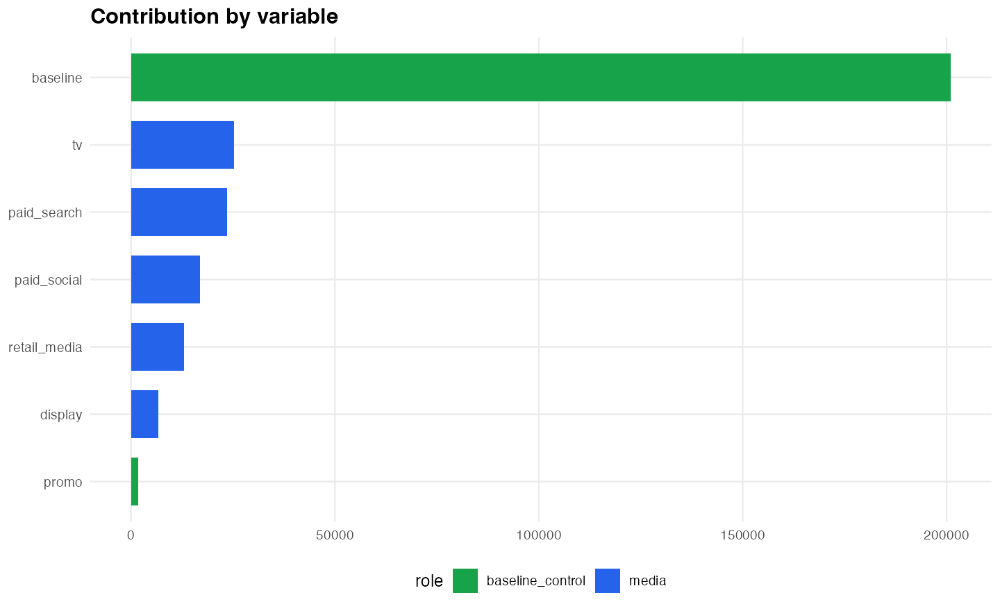
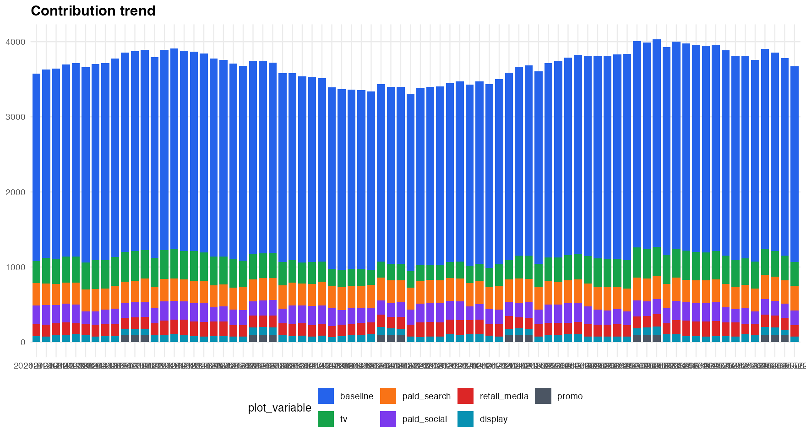
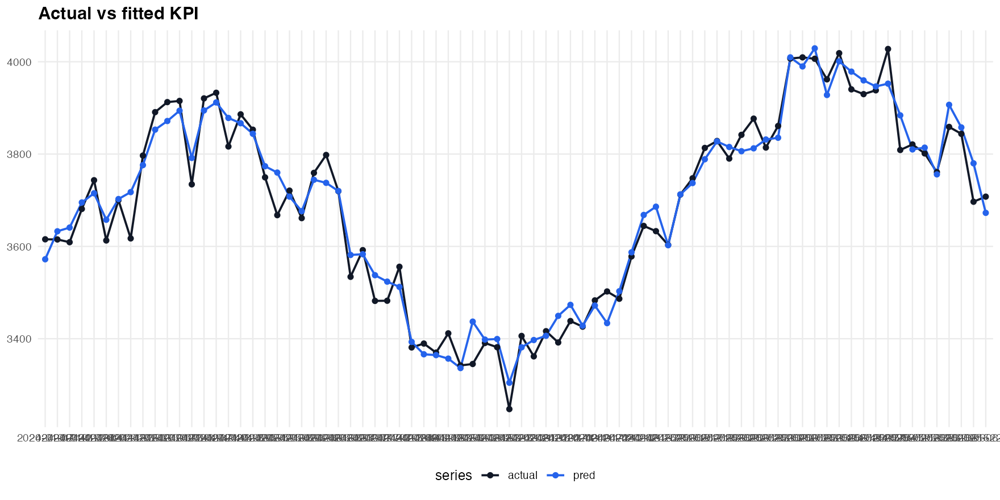
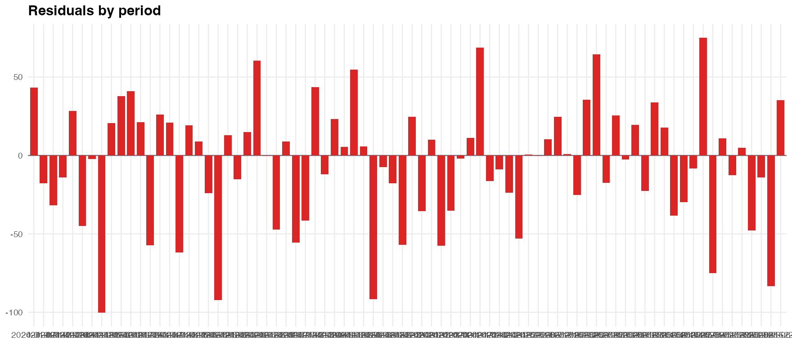
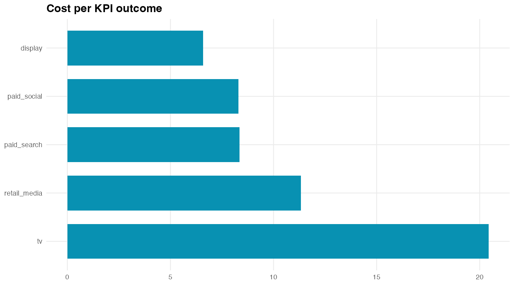
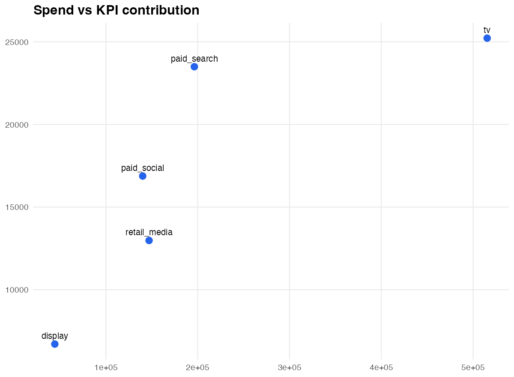
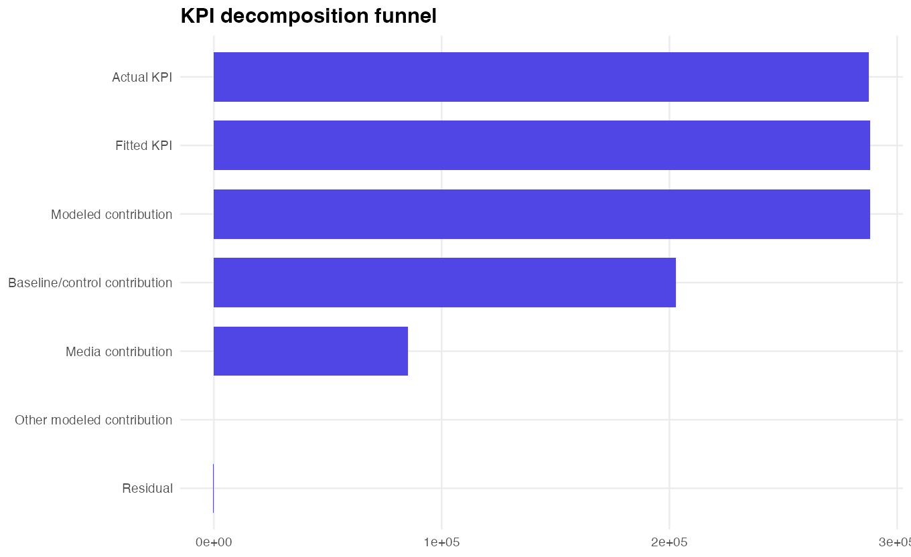
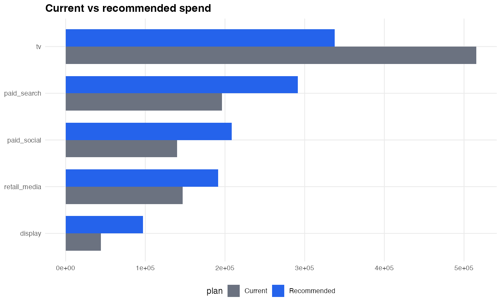
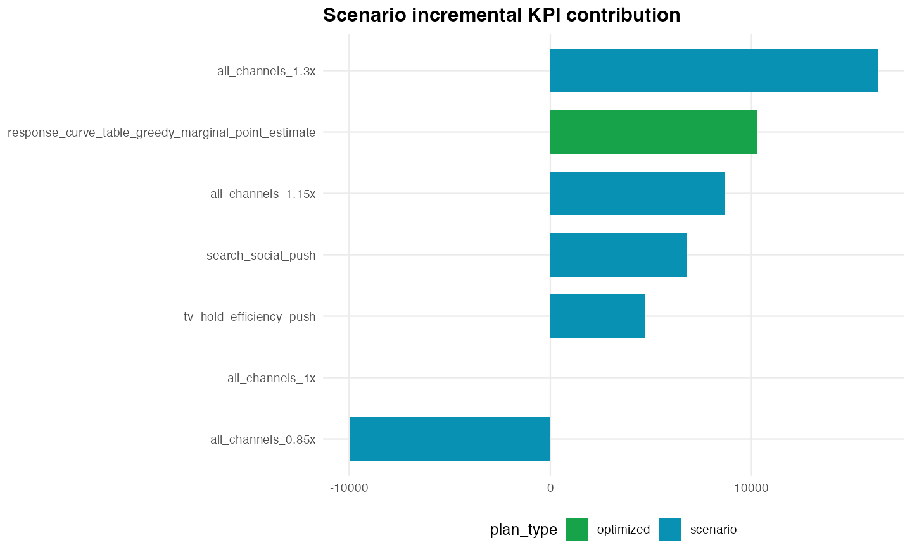
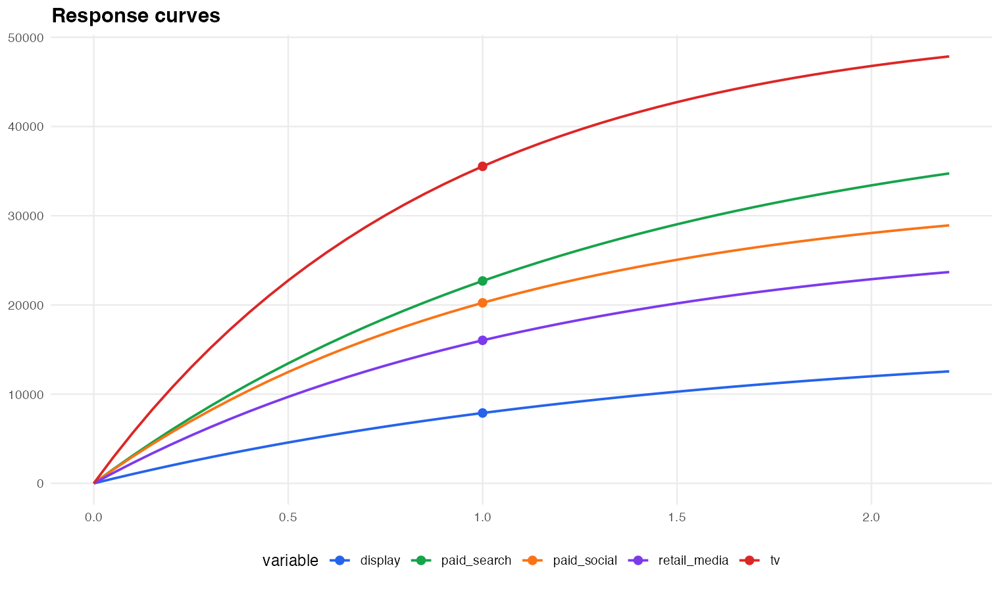
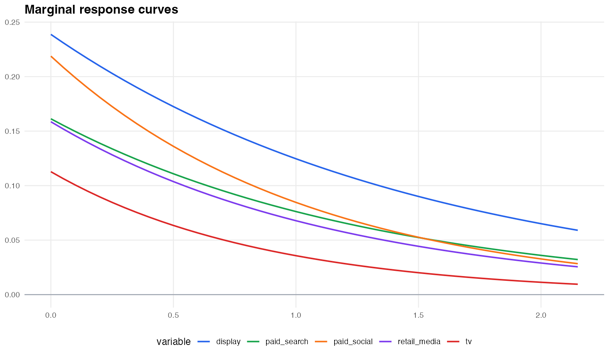
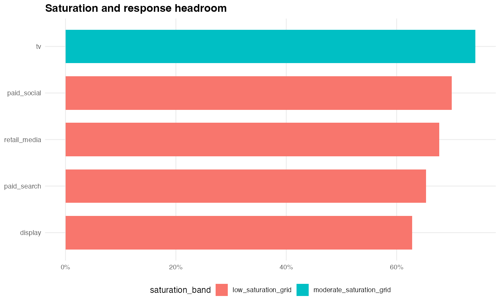
KPI decomposition funnel
| stage_order | stage | metric_type | value | share_of_actual_kpi | metric_note |
|---|---|---|---|---|---|
| 1 | Actual KPI | kpi | 287630.0557 | 1.000000000 | KPI-unit stage used for model/decomposition funnel. |
| 2 | Fitted KPI | kpi | 288060.8802 | 1.001497842 | KPI-unit stage used for model/decomposition funnel. |
| 3 | Modeled contribution | kpi | 288060.8802 | 1.001497842 | KPI-unit stage used for model/decomposition funnel. |
| 4 | Baseline/control contribution | kpi | 202778.5547 | 0.704997794 | KPI-unit stage used for model/decomposition funnel. |
| 5 | Media contribution | kpi | 85282.3255 | 0.296500049 | KPI-unit stage used for model/decomposition funnel. |
| 6 | Other modeled contribution | kpi | 0.0000 | 0.000000000 | KPI-unit stage used for model/decomposition funnel. |
| 7 | Residual | kpi | -430.8245 | -0.001497842 | KPI-unit stage used for model/decomposition funnel. |
| 8 | Media spend | cost | 1042616.9342 | NA | Cost metric; not additive to KPI stages. |
Optimizer scenarios
| plan_type | plan_name | spend | contribution | incremental_contribution | roi | cost_per_kpi | expected_profit | q05_profit | probability_profit_positive | probability_incremental_contribution_positive |
|---|---|---|---|---|---|---|---|---|---|---|
| scenario | all_channels_1.3x | 1355402.0 | 118660.65 | 16281.354 | 0.08754646 | 11.422506 | NA | NA | NA | NA |
| scenario | all_channels_1.15x | 1199009.5 | 111077.10 | 8697.799 | 0.09264072 | 10.794390 | NA | NA | NA | NA |
| scenario | search_social_push | 1136474.1 | 109169.81 | 6790.513 | 0.09606009 | 10.410150 | NA | NA | NA | NA |
| scenario | tv_hold_efficiency_push | 1111297.8 | 107068.75 | 4689.450 | 0.09634569 | 10.379292 | NA | NA | NA | NA |
| scenario | all_channels_1x | 1042616.9 | 102379.30 | 0.000 | 0.09819455 | 10.183865 | NA | NA | NA | NA |
| scenario | all_channels_0.85x | 886224.4 | 92396.64 | -9982.655 | 0.10425875 | 9.591521 | NA | NA | NA | NA |
| optimized | response_curve_table_greedy_marginal_point_estimate | 1126026.3 | 112673.21 | 10293.908 | 0.10006268 | 9.993736 | 2367644 | 1760940 | 1 | 1 |
Recommended plan
| variable | current_spend | recommended_spend | spend_change | current_contribution | expected_contribution | contribution_change | expected_roi | expected_mroi |
|---|---|---|---|---|---|---|---|---|
| tv | 515319.09 | 337807.89 | -177511.21 | 35534.888 | 27527.68 | -8007.210 | 0.08148915 | 0.05340276 |
| paid_search | 196231.04 | 291237.01 | 95005.96 | 22688.238 | 28870.88 | 6182.643 | 0.09913191 | 0.05436873 |
| paid_social | 139951.50 | 208314.86 | 68363.36 | 20237.546 | 24974.26 | 4736.710 | 0.11988706 | 0.05517542 |
| retail_media | 146914.36 | 191424.47 | 44510.11 | 16032.382 | 18748.99 | 2716.607 | 0.09794458 | 0.05253167 |
| display | 44200.94 | 97242.06 | 53041.12 | 7886.245 | 12551.40 | 4665.158 | 0.12907380 | NA |
Optimizer chart registry
| chart_id | chart_name | audience | required_table | required_columns | business_question_answered | recommended_slide_title | available | skip_if_missing_columns |
|---|---|---|---|---|---|---|---|---|
| contribution_by_variable | Contribution by variable | client | contribution_by_variable | variable|contribution|role | Which drivers contributed the most KPI? | What drove KPI contribution? | TRUE | FALSE |
| contribution_trend | Contribution trend | client | contribution_by_period_variable | period_label|period_sort|variable|contribution | How did driver contribution move over time? | How contribution changed over time | TRUE | FALSE |
| actual_vs_fitted | Actual vs fitted KPI | appendix | fit_by_period | period_label|period_sort|actual|pred | How closely did the model fit observed KPI? | Model fit over time | TRUE | FALSE |
| residuals_by_period | Residuals by period | internal_qa | fit_by_period | period_label|period_sort|residual | Where are residuals concentrated? | Residual QA by period | TRUE | FALSE |
| cost_per_outcome | Cost per KPI outcome | client | kpi_economics | variable|cost_per_outcome | Which channels look efficient on average? | Cost per KPI by channel | TRUE | FALSE |
| spend_vs_contribution | Spend vs KPI contribution | client | kpi_economics | variable|spend|contribution | How does contribution compare with spend? | Spend and contribution by channel | TRUE | FALSE |
| kpi_decomposition_funnel | KPI decomposition funnel | client | funnel_summary | stage|value | How does actual KPI decompose into model components? | KPI decomposition funnel | TRUE | FALSE |
| optimizer_current_vs_recommended_spend | Current vs recommended spend | client | optimizer_plan | variable|current_spend|recommended_spend | How does the recommended plan change spend? | Recommended budget changes | TRUE | FALSE |
| optimizer_scenario_incremental_contribution | Scenario incremental contribution | client | optimizer_scenario_comparison | plan_name|incremental_contribution | Which scenarios add the most incremental KPI? | Scenario KPI upside | TRUE | FALSE |
| optimizer_response_curves | Response curves | client | optimizer_response_curves | variable|spend_multiplier|contribution | How does expected contribution change as spend/support changes? | Response curves by channel | TRUE | FALSE |
| optimizer_mroi_curves | Marginal response curves | appendix | optimizer_response_curves | variable|spend_multiplier|mroi | Where is marginal response strongest or weakest? | Marginal response by channel | TRUE | FALSE |
| optimizer_saturation_headroom | Saturation and headroom | appendix | optimizer_saturation_headroom | variable|pct_of_peak_grid_contribution | Which channels have response headroom? | Saturation and headroom | TRUE | FALSE |
All periods
Contribution by variable
| variable | role | contribution | share_of_actual_kpi |
|---|---|---|---|
| baseline | baseline_control | 200978.555 | 0.698739755 |
| tv | media | 25223.479 | 0.087694171 |
| paid_search | media | 23495.181 | 0.081685417 |
| paid_social | media | 16877.488 | 0.058677764 |
| retail_media | media | 12978.050 | 0.045120633 |
| display | media | 6708.127 | 0.023322065 |
| promo | baseline_control | 1800.000 | 0.006258039 |
KPI economics
| variable | spend | contribution | outcome_per_cost | cost_per_outcome | efficiency_index |
|---|---|---|---|---|---|
| display | 44200.94 | 6708.127 | 0.15176436 | 6.589162 | 1.855391 |
| paid_social | 139951.50 | 16877.488 | 0.12059527 | 8.292199 | 1.474334 |
| paid_search | 196231.04 | 23495.181 | 0.11973223 | 8.351970 | 1.463783 |
| retail_media | 146914.36 | 12978.050 | 0.08833752 | 11.320218 | 1.079968 |
| tv | 515319.09 | 25223.479 | 0.04894730 | 20.430135 | 0.598404 |
2024-01-07
Contribution by variable
| variable | role | contribution | share_of_period_model_contribution |
|---|---|---|---|
| baseline | baseline_control | 2491.09147 | 0.69736855 |
| tv | media | 297.03426 | 0.08315325 |
| paid_search | media | 296.31126 | 0.08295085 |
| paid_social | media | 248.53240 | 0.06957540 |
| retail_media | media | 158.05834 | 0.04424764 |
| display | media | 81.10275 | 0.02270431 |
| promo | baseline_control | 0.00000 | 0.00000000 |
KPI economics
| variable | spend | contribution | outcome_per_cost | cost_per_outcome |
|---|---|---|---|---|
| display | 510.0938 | 81.10275 | 0.15899577 | 6.289476 |
| paid_search | 2452.0355 | 296.31126 | 0.12084297 | 8.275202 |
| paid_social | 2238.0979 | 248.53240 | 0.11104626 | 9.005256 |
| retail_media | 1729.0698 | 158.05834 | 0.09141235 | 10.939440 |
| tv | 5664.7992 | 297.03426 | 0.05243509 | 19.071198 |
2024-01-14
Contribution by variable
| variable | role | contribution | share_of_period_model_contribution |
|---|---|---|---|
| baseline | baseline_control | 2514.26656 | 0.69211424 |
| tv | media | 340.57829 | 0.09375262 |
| paid_search | media | 286.39073 | 0.07883615 |
| paid_social | media | 257.33046 | 0.07083659 |
| retail_media | media | 159.35279 | 0.04386581 |
| display | media | 74.81463 | 0.02059458 |
| promo | baseline_control | 0.00000 | 0.00000000 |
KPI economics
| variable | spend | contribution | outcome_per_cost | cost_per_outcome |
|---|---|---|---|---|
| display | 456.2873 | 74.81463 | 0.16396387 | 6.098905 |
| paid_search | 2327.3820 | 286.39073 | 0.12305274 | 8.126597 |
| paid_social | 2363.4076 | 257.33046 | 0.10888112 | 9.184329 |
| retail_media | 1765.9799 | 159.35279 | 0.09023477 | 11.082203 |
| tv | 6977.9509 | 340.57829 | 0.04880778 | 20.488537 |
2024-01-21
Contribution by variable
| variable | role | contribution | share_of_period_model_contribution |
|---|---|---|---|
| baseline | baseline_control | 2536.81350 | 0.69677779 |
| tv | media | 329.09905 | 0.09039250 |
| paid_search | media | 283.50758 | 0.07787005 |
| paid_social | media | 243.15529 | 0.06678662 |
| retail_media | media | 152.73369 | 0.04195084 |
| display | media | 95.46922 | 0.02622220 |
| promo | baseline_control | 0.00000 | 0.00000000 |
KPI economics
| variable | spend | contribution | outcome_per_cost | cost_per_outcome |
|---|---|---|---|---|
| display | 649.3141 | 95.46922 | 0.14703088 | 6.801292 |
| paid_search | 2283.6433 | 283.50758 | 0.12414705 | 8.054964 |
| paid_social | 2147.1060 | 243.15529 | 0.11324792 | 8.830184 |
| retail_media | 1662.2464 | 152.73369 | 0.09188391 | 10.883298 |
| tv | 6565.3563 | 329.09905 | 0.05012661 | 19.949484 |
2024-01-28
Contribution by variable
| variable | role | contribution | share_of_period_model_contribution |
|---|---|---|---|
| baseline | baseline_control | 2558.42966 | 0.69237280 |
| tv | media | 343.25857 | 0.09289405 |
| paid_search | media | 279.04942 | 0.07551751 |
| paid_social | media | 253.84452 | 0.06869645 |
| retail_media | media | 161.06294 | 0.04358752 |
| display | media | 99.51691 | 0.02693168 |
| promo | baseline_control | 0.00000 | 0.00000000 |
KPI economics
| variable | spend | contribution | outcome_per_cost | cost_per_outcome |
|---|---|---|---|---|
| display | 695.1424 | 99.51691 | 0.14316046 | 6.985169 |
| paid_search | 2214.9975 | 279.04942 | 0.12598182 | 7.937653 |
| paid_social | 2338.9549 | 253.84452 | 0.10852904 | 9.214124 |
| retail_media | 1764.6805 | 161.06294 | 0.09127031 | 10.956465 |
| tv | 6995.5366 | 343.25857 | 0.04906823 | 20.379787 |
2024-02-04
Contribution by variable
| variable | role | contribution | share_of_period_model_contribution |
|---|---|---|---|
| baseline | baseline_control | 2578.8260 | 0.69414775 |
| tv | media | 343.7735 | 0.09253419 |
| paid_search | media | 294.8121 | 0.07935516 |
| paid_social | media | 246.6082 | 0.06638003 |
| retail_media | media | 148.3072 | 0.03992014 |
| display | media | 102.7697 | 0.02766273 |
| promo | baseline_control | 0.0000 | 0.00000000 |
KPI economics
| variable | spend | contribution | outcome_per_cost | cost_per_outcome |
|---|---|---|---|---|
| display | 744.059 | 102.7697 | 0.13812039 | 7.240061 |
| paid_search | 2429.487 | 294.8121 | 0.12134746 | 8.240799 |
| paid_social | 2179.149 | 246.6082 | 0.11316721 | 8.836482 |
| retail_media | 1565.452 | 148.3072 | 0.09473764 | 10.555467 |
| tv | 7023.411 | 343.7735 | 0.04894680 | 20.430345 |
2024-02-11
Contribution by variable
| variable | role | contribution | share_of_period_model_contribution |
|---|---|---|---|
| baseline | baseline_control | 2597.73131 | 0.71020580 |
| tv | media | 359.90535 | 0.09839619 |
| paid_search | media | 292.40088 | 0.07994083 |
| paid_social | media | 166.16931 | 0.04542980 |
| retail_media | media | 148.40036 | 0.04057186 |
| display | media | 93.10909 | 0.02545553 |
| promo | baseline_control | 0.00000 | 0.00000000 |
KPI economics
| variable | spend | contribution | outcome_per_cost | cost_per_outcome |
|---|---|---|---|---|
| display | 627.4769 | 93.10909 | 0.14838649 | 6.739158 |
| paid_search | 2380.8207 | 292.40088 | 0.12281516 | 8.142317 |
| paid_social | 1179.5987 | 166.16931 | 0.14086936 | 7.098776 |
| retail_media | 1574.0828 | 148.40036 | 0.09427735 | 10.607001 |
| tv | 7556.7402 | 359.90535 | 0.04762706 | 20.996466 |
2024-02-18
Contribution by variable
| variable | role | contribution | share_of_period_model_contribution |
|---|---|---|---|
| baseline | baseline_control | 2614.89604 | 0.70623405 |
| tv | media | 378.60296 | 0.10225351 |
| paid_search | media | 297.60749 | 0.08037816 |
| paid_social | media | 181.86175 | 0.04911742 |
| retail_media | media | 156.62126 | 0.04230045 |
| display | media | 73.00181 | 0.01971641 |
| promo | baseline_control | 0.00000 | 0.00000000 |
KPI economics
| variable | spend | contribution | outcome_per_cost | cost_per_outcome |
|---|---|---|---|---|
| display | 443.2932 | 73.00181 | 0.16468063 | 6.072359 |
| paid_search | 2458.6632 | 297.60749 | 0.12104443 | 8.261429 |
| paid_social | 1355.2354 | 181.86175 | 0.13419200 | 7.452009 |
| retail_media | 1716.7907 | 156.62126 | 0.09122910 | 10.961415 |
| tv | 8197.9943 | 378.60296 | 0.04618239 | 21.653276 |
2024-02-25
Contribution by variable
| variable | role | contribution | share_of_period_model_contribution |
|---|---|---|---|
| baseline | baseline_control | 2630.09607 | 0.70746916 |
| tv | media | 377.08147 | 0.10143109 |
| paid_search | media | 277.81366 | 0.07472906 |
| paid_social | media | 196.85246 | 0.05295132 |
| retail_media | media | 153.61522 | 0.04132094 |
| display | media | 82.15347 | 0.02209845 |
| promo | baseline_control | 0.00000 | 0.00000000 |
KPI economics
| variable | spend | contribution | outcome_per_cost | cost_per_outcome |
|---|---|---|---|---|
| display | 517.0363 | 82.15347 | 0.15889302 | 6.293543 |
| paid_search | 2204.4488 | 277.81366 | 0.12602409 | 7.934991 |
| paid_social | 1538.6765 | 196.85246 | 0.12793623 | 7.816394 |
| retail_media | 1665.3792 | 153.61522 | 0.09224039 | 10.841238 |
| tv | 8139.1890 | 377.08147 | 0.04632912 | 21.584696 |
2024-03-03
Contribution by variable
| variable | role | contribution | share_of_period_model_contribution |
|---|---|---|---|
| baseline | baseline_control | 2643.13593 | 0.69996608 |
| tv | media | 385.35824 | 0.10205215 |
| paid_search | media | 303.97269 | 0.08049929 |
| paid_social | media | 203.74899 | 0.05395764 |
| retail_media | media | 159.76697 | 0.04231014 |
| display | media | 80.10866 | 0.02121470 |
| promo | baseline_control | 0.00000 | 0.00000000 |
KPI economics
| variable | spend | contribution | outcome_per_cost | cost_per_outcome |
|---|---|---|---|---|
| display | 500.5281 | 80.10866 | 0.16004826 | 6.248115 |
| paid_search | 2556.7360 | 303.97269 | 0.11889092 | 8.411072 |
| paid_social | 1611.1297 | 203.74899 | 0.12646343 | 7.907425 |
| retail_media | 1751.7466 | 159.76697 | 0.09120439 | 10.964385 |
| tv | 8443.8932 | 385.35824 | 0.04563751 | 21.911801 |
2024-03-10
Contribution by variable
| variable | role | contribution | share_of_period_model_contribution |
|---|---|---|---|
| baseline | baseline_control | 2653.85164 | 0.68878426 |
| tv | media | 397.47976 | 0.10316244 |
| paid_search | media | 286.09657 | 0.07425389 |
| paid_social | media | 192.34656 | 0.04992189 |
| retail_media | media | 149.18254 | 0.03871904 |
| promo | baseline_control | 100.00000 | 0.02595414 |
| display | media | 73.99342 | 0.01920435 |
KPI economics
| variable | spend | contribution | outcome_per_cost | cost_per_outcome |
|---|---|---|---|---|
| display | 450.4851 | 73.99342 | 0.16425278 | 6.088177 |
| paid_search | 2347.4414 | 286.09657 | 0.12187592 | 8.205066 |
| paid_social | 1466.8594 | 192.34656 | 0.13112815 | 7.626127 |
| retail_media | 1592.0990 | 149.18254 | 0.09370180 | 10.672154 |
| tv | 8880.4048 | 397.47976 | 0.04475919 | 22.341779 |
2024-03-17
Contribution by variable
| variable | role | contribution | share_of_period_model_contribution |
|---|---|---|---|
| baseline | baseline_control | 2662.11312 | 0.68759805 |
| tv | media | 392.09493 | 0.10127432 |
| paid_search | media | 283.20683 | 0.07314958 |
| paid_social | media | 204.32120 | 0.05277419 |
| retail_media | media | 152.35120 | 0.03935084 |
| promo | baseline_control | 100.00000 | 0.02582903 |
| display | media | 77.52511 | 0.02002399 |
KPI economics
| variable | spend | contribution | outcome_per_cost | cost_per_outcome |
|---|---|---|---|---|
| display | 477.2819 | 77.52511 | 0.16243044 | 6.156482 |
| paid_search | 2264.7312 | 283.20683 | 0.12505097 | 7.996739 |
| paid_social | 1594.2097 | 204.32120 | 0.12816457 | 7.802469 |
| retail_media | 1628.9000 | 152.35120 | 0.09353011 | 10.691744 |
| tv | 8662.0290 | 392.09493 | 0.04526594 | 22.091663 |
2024-03-24
Contribution by variable
| variable | role | contribution | share_of_period_model_contribution |
|---|---|---|---|
| baseline | baseline_control | 2667.82606 | 0.68511733 |
| tv | media | 376.98650 | 0.09681290 |
| paid_search | media | 310.82721 | 0.07982271 |
| paid_social | media | 204.61244 | 0.05254598 |
| retail_media | media | 160.38112 | 0.04118705 |
| promo | baseline_control | 100.00000 | 0.02568073 |
| display | media | 73.33628 | 0.01883329 |
KPI economics
| variable | spend | contribution | outcome_per_cost | cost_per_outcome |
|---|---|---|---|---|
| display | 444.0498 | 73.33628 | 0.16515328 | 6.054981 |
| paid_search | 2660.8859 | 310.82721 | 0.11681343 | 8.560659 |
| paid_social | 1595.5897 | 204.61244 | 0.12823625 | 7.798107 |
| retail_media | 1772.2379 | 160.38112 | 0.09049638 | 11.050166 |
| tv | 8232.7853 | 376.98650 | 0.04579088 | 21.838409 |
2024-03-31
Contribution by variable
| variable | role | contribution | share_of_period_model_contribution |
|---|---|---|---|
| baseline | baseline_control | 2670.93333 | 0.70442213 |
| tv | media | 392.49720 | 0.10351577 |
| paid_search | media | 276.17558 | 0.07283753 |
| paid_social | media | 200.07976 | 0.05276830 |
| retail_media | media | 152.14151 | 0.04012524 |
| display | media | 99.83843 | 0.02633102 |
| promo | baseline_control | 0.00000 | 0.00000000 |
KPI economics
| variable | spend | contribution | outcome_per_cost | cost_per_outcome |
|---|---|---|---|---|
| display | 698.5018 | 99.83843 | 0.14293225 | 6.996322 |
| paid_search | 2192.6033 | 276.17558 | 0.12595784 | 7.939164 |
| paid_social | 1555.6377 | 200.07976 | 0.12861591 | 7.775088 |
| retail_media | 1620.4533 | 152.14151 | 0.09388824 | 10.650961 |
| tv | 8791.0441 | 392.49720 | 0.04464739 | 22.397724 |
2024-04-07
Contribution by variable
| variable | role | contribution | share_of_period_model_contribution |
|---|---|---|---|
| baseline | baseline_control | 2671.41580 | 0.68594593 |
| tv | media | 381.39786 | 0.09793245 |
| paid_search | media | 297.89686 | 0.07649170 |
| paid_social | media | 254.78378 | 0.06542145 |
| retail_media | media | 190.39638 | 0.04888854 |
| display | media | 98.60842 | 0.02531992 |
| promo | baseline_control | 0.00000 | 0.00000000 |
KPI economics
| variable | spend | contribution | outcome_per_cost | cost_per_outcome |
|---|---|---|---|---|
| display | 683.1649 | 98.60842 | 0.14434058 | 6.928059 |
| paid_search | 2458.0987 | 297.89686 | 0.12118995 | 8.251509 |
| paid_social | 2367.3220 | 254.78378 | 0.10762532 | 9.291494 |
| retail_media | 2288.9268 | 190.39638 | 0.08318151 | 12.021903 |
| tv | 8304.1783 | 381.39786 | 0.04592843 | 21.773007 |
2024-04-14
Contribution by variable
| variable | role | contribution | share_of_period_model_contribution |
|---|---|---|---|
| baseline | baseline_control | 2669.2926 | 0.68236061 |
| tv | media | 392.8488 | 0.10042530 |
| paid_search | media | 298.3118 | 0.07625849 |
| paid_social | media | 251.7687 | 0.06436052 |
| retail_media | media | 197.4438 | 0.05047325 |
| display | media | 102.1847 | 0.02612183 |
| promo | baseline_control | 0.0000 | 0.00000000 |
KPI economics
| variable | spend | contribution | outcome_per_cost | cost_per_outcome |
|---|---|---|---|---|
| display | 733.610 | 102.1847 | 0.13929019 | 7.179257 |
| paid_search | 2454.194 | 298.3118 | 0.12155184 | 8.226942 |
| paid_social | 2285.220 | 251.7687 | 0.11017263 | 9.076664 |
| retail_media | 2437.333 | 197.4438 | 0.08100812 | 12.344442 |
| tv | 8794.616 | 392.8488 | 0.04466923 | 22.386774 |
2024-04-21
Contribution by variable
| variable | role | contribution | share_of_period_model_contribution |
|---|---|---|---|
| baseline | baseline_control | 2664.62087 | 0.68706972 |
| tv | media | 381.43033 | 0.09835141 |
| paid_search | media | 288.22952 | 0.07431968 |
| paid_social | media | 247.29495 | 0.06376474 |
| retail_media | media | 198.42892 | 0.05116469 |
| display | media | 98.23486 | 0.02532976 |
| promo | baseline_control | 0.00000 | 0.00000000 |
KPI economics
| variable | spend | contribution | outcome_per_cost | cost_per_outcome |
|---|---|---|---|---|
| display | 683.1243 | 98.23486 | 0.14380232 | 6.953991 |
| paid_search | 2332.8272 | 288.22952 | 0.12355374 | 8.093644 |
| paid_social | 2252.4876 | 247.29495 | 0.10978748 | 9.108506 |
| retail_media | 2465.0121 | 198.42892 | 0.08049815 | 12.422646 |
| tv | 8304.5723 | 381.43033 | 0.04593016 | 21.772187 |
2024-04-28
Contribution by variable
| variable | role | contribution | share_of_period_model_contribution |
|---|---|---|---|
| baseline | baseline_control | 2657.49491 | 0.68725922 |
| tv | media | 393.91287 | 0.10187047 |
| paid_search | media | 294.40281 | 0.07613601 |
| paid_social | media | 245.75633 | 0.06355546 |
| retail_media | media | 196.09253 | 0.05071182 |
| display | media | 79.14195 | 0.02046703 |
| promo | baseline_control | 0.00000 | 0.00000000 |
KPI economics
| variable | spend | contribution | outcome_per_cost | cost_per_outcome |
|---|---|---|---|---|
| display | 497.7373 | 79.14195 | 0.15900344 | 6.289172 |
| paid_search | 2428.1929 | 294.40281 | 0.12124359 | 8.247859 |
| paid_social | 2191.8215 | 245.75633 | 0.11212425 | 8.918677 |
| retail_media | 2422.9843 | 196.09253 | 0.08093017 | 12.356331 |
| tv | 8828.7459 | 393.91287 | 0.04461708 | 22.412941 |
2024-05-05
Contribution by variable
| variable | role | contribution | share_of_period_model_contribution |
|---|---|---|---|
| baseline | baseline_control | 2648.04479 | 0.68887530 |
| tv | media | 380.33332 | 0.09894177 |
| paid_search | media | 292.98828 | 0.07621940 |
| paid_social | media | 251.16510 | 0.06533932 |
| retail_media | media | 199.43057 | 0.05188084 |
| display | media | 72.04973 | 0.01874337 |
| promo | baseline_control | 0.00000 | 0.00000000 |
KPI economics
| variable | spend | contribution | outcome_per_cost | cost_per_outcome |
|---|---|---|---|---|
| display | 441.0141 | 72.04973 | 0.16337285 | 6.120968 |
| paid_search | 2387.3056 | 292.98828 | 0.12272760 | 8.148126 |
| paid_social | 2262.0412 | 251.16510 | 0.11103471 | 9.006192 |
| retail_media | 2541.1755 | 199.43057 | 0.07847965 | 12.742156 |
| tv | 8242.5597 | 380.33332 | 0.04614262 | 21.671937 |
2024-05-12
Contribution by variable
| variable | role | contribution | share_of_period_model_contribution |
|---|---|---|---|
| baseline | baseline_control | 2636.43450 | 0.69863329 |
| tv | media | 381.58571 | 0.10111705 |
| paid_search | media | 294.29582 | 0.07798595 |
| retail_media | media | 196.01682 | 0.05194283 |
| paid_social | media | 185.52240 | 0.04916190 |
| display | media | 79.84767 | 0.02115897 |
| promo | baseline_control | 0.00000 | 0.00000000 |
KPI economics
| variable | spend | contribution | outcome_per_cost | cost_per_outcome |
|---|---|---|---|---|
| display | 496.1766 | 79.84767 | 0.16092591 | 6.214040 |
| paid_search | 2430.1246 | 294.29582 | 0.12110318 | 8.257421 |
| paid_social | 1379.1039 | 185.52240 | 0.13452388 | 7.433624 |
| retail_media | 2445.0045 | 196.01682 | 0.08017033 | 12.473442 |
| tv | 8286.5314 | 381.58571 | 0.04604891 | 21.716042 |
2024-05-19
Contribution by variable
| variable | role | contribution | share_of_period_model_contribution |
|---|---|---|---|
| baseline | baseline_control | 2622.85951 | 0.69758260 |
| tv | media | 366.64569 | 0.09751405 |
| paid_search | media | 296.92655 | 0.07897136 |
| paid_social | media | 200.46919 | 0.05331731 |
| retail_media | media | 193.23963 | 0.05139452 |
| display | media | 79.78624 | 0.02122016 |
| promo | baseline_control | 0.00000 | 0.00000000 |
KPI economics
| variable | spend | contribution | outcome_per_cost | cost_per_outcome |
|---|---|---|---|---|
| display | 497.8445 | 79.78624 | 0.16026338 | 6.239729 |
| paid_search | 2463.4478 | 296.92655 | 0.12053292 | 8.296489 |
| paid_social | 1545.6523 | 200.46919 | 0.12969876 | 7.710174 |
| retail_media | 2351.4835 | 193.23963 | 0.08217775 | 12.168744 |
| tv | 7788.1282 | 366.64569 | 0.04707751 | 21.241565 |
2024-05-26
Contribution by variable
| variable | role | contribution | share_of_period_model_contribution |
|---|---|---|---|
| baseline | baseline_control | 2607.5440 | 0.70325717 |
| tv | media | 374.6808 | 0.10105177 |
| paid_search | media | 293.0832 | 0.07904482 |
| paid_social | media | 205.3607 | 0.05538599 |
| retail_media | media | 150.7556 | 0.04065894 |
| display | media | 76.3857 | 0.02060130 |
| promo | baseline_control | 0.0000 | 0.00000000 |
KPI economics
| variable | spend | contribution | outcome_per_cost | cost_per_outcome |
|---|---|---|---|---|
| display | 469.6449 | 76.3857 | 0.16264564 | 6.148336 |
| paid_search | 2404.0152 | 293.0832 | 0.12191403 | 8.202501 |
| paid_social | 1621.9218 | 205.3607 | 0.12661568 | 7.897916 |
| retail_media | 1599.8473 | 150.7556 | 0.09423127 | 10.612189 |
| tv | 8109.3039 | 374.6808 | 0.04620381 | 21.643236 |
2024-06-02
Contribution by variable
| variable | role | contribution | share_of_period_model_contribution |
|---|---|---|---|
| baseline | baseline_control | 2590.73735 | 0.70469603 |
| tv | media | 347.36589 | 0.09448560 |
| paid_search | media | 314.08954 | 0.08543423 |
| paid_social | media | 200.72031 | 0.05459712 |
| retail_media | media | 151.04213 | 0.04108436 |
| display | media | 72.43469 | 0.01970267 |
| promo | baseline_control | 0.00000 | 0.00000000 |
KPI economics
| variable | spend | contribution | outcome_per_cost | cost_per_outcome |
|---|---|---|---|---|
| display | 439.9101 | 72.43469 | 0.16465791 | 6.073197 |
| paid_search | 2685.2502 | 314.08954 | 0.11696845 | 8.549314 |
| paid_social | 1567.0728 | 200.72031 | 0.12808614 | 7.807246 |
| retail_media | 1606.2060 | 151.04213 | 0.09403659 | 10.634159 |
| tv | 7169.5542 | 347.36589 | 0.04845014 | 20.639776 |
2024-06-09
Contribution by variable
| variable | role | contribution | share_of_period_model_contribution |
|---|---|---|---|
| baseline | baseline_control | 2572.71093 | 0.68709199 |
| tv | media | 339.54443 | 0.09068188 |
| paid_search | media | 287.68825 | 0.07683269 |
| paid_social | media | 188.65231 | 0.05038323 |
| retail_media | media | 157.32035 | 0.04201543 |
| promo | baseline_control | 100.00000 | 0.02670693 |
| display | media | 98.43091 | 0.02628787 |
KPI economics
| variable | spend | contribution | outcome_per_cost | cost_per_outcome |
|---|---|---|---|---|
| display | 685.2017 | 98.43091 | 0.14365246 | 6.961245 |
| paid_search | 2319.9795 | 287.68825 | 0.12400465 | 8.064214 |
| paid_social | 1429.1009 | 188.65231 | 0.13200769 | 7.575316 |
| retail_media | 1704.9929 | 157.32035 | 0.09227039 | 10.837713 |
| tv | 6866.6419 | 339.54443 | 0.04944840 | 20.223103 |
2024-06-16
Contribution by variable
| variable | role | contribution | share_of_period_model_contribution |
|---|---|---|---|
| baseline | baseline_control | 2553.7537 | 0.68324853 |
| tv | media | 332.8718 | 0.08905876 |
| paid_search | media | 296.9264 | 0.07944169 |
| paid_social | media | 197.9412 | 0.05295853 |
| retail_media | media | 155.5553 | 0.04161831 |
| display | media | 100.6161 | 0.02691950 |
| promo | baseline_control | 100.0000 | 0.02675468 |
KPI economics
| variable | spend | contribution | outcome_per_cost | cost_per_outcome |
|---|---|---|---|---|
| display | 702.1185 | 100.6161 | 0.14330355 | 6.978194 |
| paid_search | 2439.5892 | 296.9264 | 0.12171162 | 8.216142 |
| paid_social | 1551.0891 | 197.9412 | 0.12761435 | 7.836110 |
| retail_media | 1690.9313 | 155.5553 | 0.09199385 | 10.870292 |
| tv | 6673.4579 | 332.8718 | 0.04987996 | 20.048134 |
2024-06-23
Contribution by variable
| variable | role | contribution | share_of_period_model_contribution |
|---|---|---|---|
| baseline | baseline_control | 2534.16840 | 0.68122678 |
| tv | media | 330.01911 | 0.08871465 |
| paid_search | media | 295.78883 | 0.07951298 |
| paid_social | media | 208.61426 | 0.05607900 |
| retail_media | media | 155.82688 | 0.04188887 |
| promo | baseline_control | 100.00000 | 0.02688167 |
| display | media | 95.58955 | 0.02569607 |
KPI economics
| variable | spend | contribution | outcome_per_cost | cost_per_outcome |
|---|---|---|---|---|
| display | 654.3477 | 95.58955 | 0.14608371 | 6.845390 |
| paid_search | 2435.8061 | 295.78883 | 0.12143365 | 8.234950 |
| paid_social | 1697.8979 | 208.61426 | 0.12286620 | 8.138935 |
| retail_media | 1707.2027 | 155.82688 | 0.09127614 | 10.955766 |
| tv | 6613.2124 | 330.01911 | 0.04990300 | 20.038877 |
2024-06-30
Contribution by variable
| variable | role | contribution | share_of_period_model_contribution |
|---|---|---|---|
| baseline | baseline_control | 2514.2667 | 0.70202025 |
| tv | media | 312.3904 | 0.08722400 |
| paid_search | media | 307.2222 | 0.08578097 |
| paid_social | media | 197.8628 | 0.05524621 |
| retail_media | media | 149.6054 | 0.04177202 |
| display | media | 100.1256 | 0.02795655 |
| promo | baseline_control | 0.0000 | 0.00000000 |
KPI economics
| variable | spend | contribution | outcome_per_cost | cost_per_outcome |
|---|---|---|---|---|
| display | 697.2436 | 100.1256 | 0.14360207 | 6.963688 |
| paid_search | 2645.0201 | 307.2222 | 0.11615119 | 8.609468 |
| paid_social | 1522.1794 | 197.8628 | 0.12998654 | 7.693104 |
| retail_media | 1618.3313 | 149.6054 | 0.09244422 | 10.817334 |
| tv | 6081.3128 | 312.3904 | 0.05136891 | 19.467028 |
2024-07-07
Contribution by variable
| variable | role | contribution | share_of_period_model_contribution |
|---|---|---|---|
| baseline | baseline_control | 2494.36494 | 0.69615964 |
| paid_search | media | 305.75616 | 0.08533439 |
| tv | media | 295.93062 | 0.08259215 |
| paid_social | media | 247.74786 | 0.06914468 |
| retail_media | media | 158.34709 | 0.04419356 |
| display | media | 80.88917 | 0.02257560 |
| promo | baseline_control | 0.00000 | 0.00000000 |
KPI economics
| variable | spend | contribution | outcome_per_cost | cost_per_outcome |
|---|---|---|---|---|
| display | 508.3155 | 80.88917 | 0.15913182 | 6.284098 |
| paid_search | 2572.7675 | 305.75616 | 0.11884329 | 8.414442 |
| paid_social | 2196.5233 | 247.74786 | 0.11279091 | 8.865963 |
| retail_media | 1730.2243 | 158.34709 | 0.09151825 | 10.926783 |
| tv | 5742.3923 | 295.93062 | 0.05153438 | 19.404522 |
2024-07-14
Contribution by variable
| variable | role | contribution | share_of_period_model_contribution |
|---|---|---|---|
| baseline | baseline_control | 2474.77959 | 0.69956361 |
| paid_search | media | 291.31113 | 0.08234700 |
| tv | media | 284.27297 | 0.08035747 |
| paid_social | media | 239.88086 | 0.06780884 |
| retail_media | media | 164.54997 | 0.04651452 |
| display | media | 82.81027 | 0.02340857 |
| promo | baseline_control | 0.00000 | 0.00000000 |
KPI economics
| variable | spend | contribution | outcome_per_cost | cost_per_outcome |
|---|---|---|---|---|
| display | 522.4296 | 82.81027 | 0.15850992 | 6.308754 |
| paid_search | 2367.5159 | 291.31113 | 0.12304506 | 8.127104 |
| paid_social | 2101.3895 | 239.88086 | 0.11415345 | 8.760138 |
| retail_media | 1827.4770 | 164.54997 | 0.09004216 | 11.105909 |
| tv | 5318.7586 | 284.27297 | 0.05344724 | 18.710040 |
2024-07-21
Contribution by variable
| variable | role | contribution | share_of_period_model_contribution |
|---|---|---|---|
| baseline | baseline_control | 2455.8224 | 0.69694902 |
| paid_search | media | 296.0780 | 0.08402532 |
| tv | media | 291.8413 | 0.08282296 |
| paid_social | media | 255.6916 | 0.07256389 |
| retail_media | media | 152.5178 | 0.04328371 |
| display | media | 71.7248 | 0.02035511 |
| promo | baseline_control | 0.0000 | 0.00000000 |
KPI economics
| variable | spend | contribution | outcome_per_cost | cost_per_outcome |
|---|---|---|---|---|
| display | 429.381 | 71.7248 | 0.16704233 | 5.986506 |
| paid_search | 2430.901 | 296.0780 | 0.12179763 | 8.210341 |
| paid_social | 2363.859 | 255.6916 | 0.10816705 | 9.244960 |
| retail_media | 1681.870 | 152.5178 | 0.09068346 | 11.027370 |
| tv | 5576.055 | 291.8413 | 0.05233830 | 19.106466 |
2024-07-28
Contribution by variable
| variable | role | contribution | share_of_period_model_contribution |
|---|---|---|---|
| baseline | baseline_control | 2437.79598 | 0.69407773 |
| paid_search | media | 317.01763 | 0.09025976 |
| tv | media | 267.66908 | 0.07620947 |
| paid_social | media | 246.91932 | 0.07030170 |
| retail_media | media | 160.08913 | 0.04557982 |
| display | media | 82.78983 | 0.02357153 |
| promo | baseline_control | 0.00000 | 0.00000000 |
KPI economics
| variable | spend | contribution | outcome_per_cost | cost_per_outcome |
|---|---|---|---|---|
| display | 524.8949 | 82.78983 | 0.15772647 | 6.340090 |
| paid_search | 2731.9052 | 317.01763 | 0.11604269 | 8.617518 |
| paid_social | 2212.6721 | 246.91932 | 0.11159327 | 8.961114 |
| retail_media | 1770.0479 | 160.08913 | 0.09044339 | 11.056640 |
| tv | 4907.1014 | 267.66908 | 0.05454729 | 18.332717 |
2024-08-04
Contribution by variable
| variable | role | contribution | share_of_period_model_contribution |
|---|---|---|---|
| baseline | baseline_control | 2420.98937 | 0.71349756 |
| paid_search | media | 287.34824 | 0.08468532 |
| paid_social | media | 240.48252 | 0.07087338 |
| tv | media | 230.83613 | 0.06803046 |
| retail_media | media | 144.41111 | 0.04255986 |
| display | media | 69.06178 | 0.02035342 |
| promo | baseline_control | 0.00000 | 0.00000000 |
KPI economics
| variable | spend | contribution | outcome_per_cost | cost_per_outcome |
|---|---|---|---|---|
| display | 407.7353 | 69.06178 | 0.16937896 | 5.903921 |
| paid_search | 2321.5112 | 287.34824 | 0.12377638 | 8.079086 |
| paid_social | 2078.6863 | 240.48252 | 0.11568966 | 8.643815 |
| retail_media | 1511.5283 | 144.41111 | 0.09553980 | 10.466842 |
| tv | 4069.1072 | 230.83613 | 0.05672894 | 17.627687 |
2024-08-11
Contribution by variable
| variable | role | contribution | share_of_period_model_contribution |
|---|---|---|---|
| baseline | baseline_control | 2405.6738 | 0.71462993 |
| paid_search | media | 299.8305 | 0.08906771 |
| tv | media | 232.0683 | 0.06893826 |
| paid_social | media | 195.1783 | 0.05797971 |
| retail_media | media | 152.5491 | 0.04531625 |
| display | media | 81.0211 | 0.02406814 |
| promo | baseline_control | 0.0000 | 0.00000000 |
KPI economics
| variable | spend | contribution | outcome_per_cost | cost_per_outcome |
|---|---|---|---|---|
| display | 511.1804 | 81.0211 | 0.15849804 | 6.309226 |
| paid_search | 2503.2809 | 299.8305 | 0.11977502 | 8.348986 |
| paid_social | 1498.3866 | 195.1783 | 0.13025899 | 7.677014 |
| retail_media | 1625.7506 | 152.5491 | 0.09383300 | 10.657231 |
| tv | 4116.8901 | 232.0683 | 0.05636981 | 17.739993 |
2024-08-18
Contribution by variable
| variable | role | contribution | share_of_period_model_contribution |
|---|---|---|---|
| baseline | baseline_control | 2392.09883 | 0.71098624 |
| paid_search | media | 301.07401 | 0.08948605 |
| tv | media | 220.60099 | 0.06556764 |
| paid_social | media | 214.90470 | 0.06387457 |
| retail_media | media | 136.44108 | 0.04055340 |
| display | media | 99.36018 | 0.02953211 |
| promo | baseline_control | 0.00000 | 0.00000000 |
KPI economics
| variable | spend | contribution | outcome_per_cost | cost_per_outcome |
|---|---|---|---|---|
| display | 710.1402 | 99.36018 | 0.13991628 | 7.147131 |
| paid_search | 2490.2879 | 301.07401 | 0.12089928 | 8.271348 |
| paid_social | 1726.6565 | 214.90470 | 0.12446292 | 8.034522 |
| retail_media | 1393.2019 | 136.44108 | 0.09793346 | 10.211015 |
| tv | 3812.5481 | 220.60099 | 0.05786182 | 17.282552 |
2024-08-25
Contribution by variable
| variable | role | contribution | share_of_period_model_contribution |
|---|---|---|---|
| baseline | baseline_control | 2380.48855 | 0.70912997 |
| paid_search | media | 293.35749 | 0.08738903 |
| tv | media | 230.94778 | 0.06879764 |
| paid_social | media | 196.15944 | 0.05843445 |
| retail_media | media | 160.23522 | 0.04773289 |
| display | media | 95.72584 | 0.02851602 |
| promo | baseline_control | 0.00000 | 0.00000000 |
KPI economics
| variable | spend | contribution | outcome_per_cost | cost_per_outcome |
|---|---|---|---|---|
| display | 665.9851 | 95.72584 | 0.14373570 | 6.957214 |
| paid_search | 2401.8776 | 293.35749 | 0.12213674 | 8.187545 |
| paid_social | 1503.3072 | 196.15944 | 0.13048527 | 7.663700 |
| retail_media | 1755.2511 | 160.23522 | 0.09128906 | 10.954215 |
| tv | 4056.9649 | 230.94778 | 0.05692624 | 17.566590 |
2024-09-01
Contribution by variable
| variable | role | contribution | share_of_period_model_contribution |
|---|---|---|---|
| baseline | baseline_control | 2371.0384 | 0.71064618 |
| paid_search | media | 304.4866 | 0.09126054 |
| tv | media | 201.4484 | 0.06037800 |
| paid_social | media | 196.2603 | 0.05882303 |
| retail_media | media | 160.9783 | 0.04824831 |
| display | media | 102.2421 | 0.03064394 |
| promo | baseline_control | 0.0000 | 0.00000000 |
KPI economics
| variable | spend | contribution | outcome_per_cost | cost_per_outcome |
|---|---|---|---|---|
| display | 732.6611 | 102.2421 | 0.13954898 | 7.165943 |
| paid_search | 2543.9049 | 304.4866 | 0.11969261 | 8.354735 |
| paid_social | 1521.1541 | 196.2603 | 0.12902068 | 7.750695 |
| retail_media | 1763.0033 | 160.9783 | 0.09130911 | 10.951809 |
| tv | 3400.7152 | 201.4484 | 0.05923708 | 16.881319 |
2024-09-08
Contribution by variable
| variable | role | contribution | share_of_period_model_contribution |
|---|---|---|---|
| baseline | baseline_control | 2363.9125 | 0.68777244 |
| paid_search | media | 305.5369 | 0.08889493 |
| tv | media | 212.9145 | 0.06194677 |
| paid_social | media | 185.7880 | 0.05405439 |
| retail_media | media | 165.5352 | 0.04816190 |
| display | media | 103.3691 | 0.03007490 |
| promo | baseline_control | 100.0000 | 0.02909467 |
KPI economics
| variable | spend | contribution | outcome_per_cost | cost_per_outcome |
|---|---|---|---|---|
| display | 748.2403 | 103.3691 | 0.13814962 | 7.238529 |
| paid_search | 2601.7014 | 305.5369 | 0.11743733 | 8.515180 |
| paid_social | 1380.5360 | 185.7880 | 0.13457669 | 7.430707 |
| retail_media | 1859.4577 | 165.5352 | 0.08902336 | 11.233007 |
| tv | 3652.1211 | 212.9145 | 0.05829886 | 17.152993 |
2024-09-15
Contribution by variable
| variable | role | contribution | share_of_period_model_contribution |
|---|---|---|---|
| baseline | baseline_control | 2359.24073 | 0.69427760 |
| paid_search | media | 303.09586 | 0.08919508 |
| tv | media | 216.38085 | 0.06367658 |
| paid_social | media | 181.50180 | 0.05341237 |
| retail_media | media | 157.06408 | 0.04622083 |
| promo | baseline_control | 100.00000 | 0.02942801 |
| display | media | 80.83975 | 0.02378953 |
KPI economics
| variable | spend | contribution | outcome_per_cost | cost_per_outcome |
|---|---|---|---|---|
| display | 504.7124 | 80.83975 | 0.16016993 | 6.243369 |
| paid_search | 2530.6258 | 303.09586 | 0.11977111 | 8.349259 |
| paid_social | 1338.0159 | 181.50180 | 0.13564996 | 7.371915 |
| retail_media | 1699.8208 | 157.06408 | 0.09240037 | 10.822467 |
| tv | 3737.9144 | 216.38085 | 0.05788812 | 17.274701 |
2024-09-22
Contribution by variable
| variable | role | contribution | share_of_period_model_contribution |
|---|---|---|---|
| baseline | baseline_control | 2357.1175 | 0.69339938 |
| paid_search | media | 295.8033 | 0.08701721 |
| tv | media | 219.0717 | 0.06444489 |
| paid_social | media | 192.3601 | 0.05658706 |
| retail_media | media | 158.6947 | 0.04668363 |
| promo | baseline_control | 100.0000 | 0.02941726 |
| display | media | 76.3177 | 0.02245057 |
KPI economics
| variable | spend | contribution | outcome_per_cost | cost_per_outcome |
|---|---|---|---|---|
| display | 473.423 | 76.3177 | 0.16120404 | 6.203318 |
| paid_search | 2426.862 | 295.8033 | 0.12188716 | 8.204309 |
| paid_social | 1473.151 | 192.3601 | 0.13057727 | 7.658301 |
| retail_media | 1729.270 | 158.6947 | 0.09176976 | 10.896835 |
| tv | 3788.191 | 219.0717 | 0.05783016 | 17.292014 |
2024-09-29
Contribution by variable
| variable | role | contribution | share_of_period_model_contribution |
|---|---|---|---|
| baseline | baseline_control | 2357.6000 | 0.71341860 |
| paid_search | media | 290.8382 | 0.08800873 |
| tv | media | 223.3066 | 0.06757341 |
| paid_social | media | 202.3236 | 0.06122388 |
| retail_media | media | 155.7307 | 0.04712470 |
| display | media | 74.8526 | 0.02265068 |
| promo | baseline_control | 0.0000 | 0.00000000 |
KPI economics
| variable | spend | contribution | outcome_per_cost | cost_per_outcome |
|---|---|---|---|---|
| display | 464.2346 | 74.8526 | 0.16123872 | 6.201984 |
| paid_search | 2380.8869 | 290.8382 | 0.12215541 | 8.186293 |
| paid_social | 1569.9069 | 202.3236 | 0.12887618 | 7.759386 |
| retail_media | 1694.9789 | 155.7307 | 0.09187768 | 10.884037 |
| tv | 3868.6149 | 223.3066 | 0.05772262 | 17.324232 |
2024-10-06
Contribution by variable
| variable | role | contribution | share_of_period_model_contribution |
|---|---|---|---|
| baseline | baseline_control | 2360.7073 | 0.69814435 |
| paid_search | media | 299.6384 | 0.08861362 |
| paid_social | media | 249.6719 | 0.07383679 |
| tv | media | 208.0672 | 0.06153279 |
| retail_media | media | 196.9782 | 0.05825339 |
| display | media | 66.3399 | 0.01961905 |
| promo | baseline_control | 0.0000 | 0.00000000 |
KPI economics
| variable | spend | contribution | outcome_per_cost | cost_per_outcome |
|---|---|---|---|---|
| display | 391.7621 | 66.3399 | 0.16933718 | 5.905378 |
| paid_search | 2471.5602 | 299.6384 | 0.12123450 | 8.248477 |
| paid_social | 2242.8223 | 249.6719 | 0.11132042 | 8.983078 |
| retail_media | 2434.3713 | 196.9782 | 0.08091542 | 12.358583 |
| tv | 3594.3364 | 208.0672 | 0.05788750 | 17.274886 |
2024-10-13
Contribution by variable
| variable | role | contribution | share_of_period_model_contribution |
|---|---|---|---|
| baseline | baseline_control | 2366.42022 | 0.69658610 |
| paid_search | media | 303.92705 | 0.08946482 |
| paid_social | media | 255.64152 | 0.07525136 |
| tv | media | 200.83642 | 0.05911877 |
| retail_media | media | 194.26804 | 0.05718529 |
| display | media | 76.07505 | 0.02239366 |
| promo | baseline_control | 0.00000 | 0.00000000 |
KPI economics
| variable | spend | contribution | outcome_per_cost | cost_per_outcome |
|---|---|---|---|---|
| display | 465.8002 | 76.07505 | 0.16332121 | 6.122904 |
| paid_search | 2541.1888 | 303.92705 | 0.11960034 | 8.361180 |
| paid_social | 2349.7132 | 255.64152 | 0.10879690 | 9.191438 |
| retail_media | 2399.7421 | 194.26804 | 0.08095372 | 12.352738 |
| tv | 3430.1180 | 200.83642 | 0.05855088 | 17.079164 |
2024-10-20
Contribution by variable
| variable | role | contribution | share_of_period_model_contribution |
|---|---|---|---|
| baseline | baseline_control | 2374.68169 | 0.69714738 |
| paid_search | media | 305.06940 | 0.08956078 |
| paid_social | media | 251.65835 | 0.07388062 |
| tv | media | 210.25464 | 0.06172552 |
| retail_media | media | 192.39693 | 0.05648294 |
| display | media | 72.22261 | 0.02120276 |
| promo | baseline_control | 0.00000 | 0.00000000 |
KPI economics
| variable | spend | contribution | outcome_per_cost | cost_per_outcome |
|---|---|---|---|---|
| display | 435.9343 | 72.22261 | 0.16567314 | 6.035981 |
| paid_search | 2556.2516 | 305.06940 | 0.11934248 | 8.379246 |
| paid_social | 2321.9030 | 251.65835 | 0.10838452 | 9.226410 |
| retail_media | 2334.9871 | 192.39693 | 0.08239743 | 12.136301 |
| tv | 3598.6272 | 210.25464 | 0.05842635 | 17.115566 |
2024-10-27
Contribution by variable
| variable | role | contribution | share_of_period_model_contribution |
|---|---|---|---|
| baseline | baseline_control | 2385.3974 | 0.69151956 |
| paid_search | media | 306.6222 | 0.08888884 |
| paid_social | media | 246.3536 | 0.07141717 |
| tv | media | 211.2664 | 0.06124550 |
| retail_media | media | 198.3456 | 0.05749979 |
| display | media | 101.5158 | 0.02942914 |
| promo | baseline_control | 0.0000 | 0.00000000 |
KPI economics
| variable | spend | contribution | outcome_per_cost | cost_per_outcome |
|---|---|---|---|---|
| display | 714.9692 | 101.5158 | 0.14198632 | 7.042932 |
| paid_search | 2584.1095 | 306.6222 | 0.11865680 | 8.427667 |
| paid_social | 2197.7719 | 246.3536 | 0.11209244 | 8.921209 |
| retail_media | 2484.1332 | 198.3456 | 0.07984498 | 12.524268 |
| tv | 3615.8978 | 211.2664 | 0.05842709 | 17.115348 |
2024-11-03
Contribution by variable
| variable | role | contribution | share_of_period_model_contribution |
|---|---|---|---|
| baseline | baseline_control | 2398.43726 | 0.69052158 |
| paid_search | media | 307.99955 | 0.08867455 |
| paid_social | media | 244.18430 | 0.07030183 |
| tv | media | 226.98342 | 0.06534961 |
| retail_media | media | 201.89894 | 0.05812767 |
| display | media | 93.86699 | 0.02702476 |
| promo | baseline_control | 0.00000 | 0.00000000 |
KPI economics
| variable | spend | contribution | outcome_per_cost | cost_per_outcome |
|---|---|---|---|---|
| display | 643.1773 | 93.86699 | 0.14594263 | 6.852007 |
| paid_search | 2596.7110 | 307.99955 | 0.11861141 | 8.430892 |
| paid_social | 2144.0323 | 244.18430 | 0.11389022 | 8.780385 |
| retail_media | 2536.2724 | 201.89894 | 0.07960460 | 12.562089 |
| tv | 3987.4071 | 226.98342 | 0.05692507 | 17.566953 |
2024-11-10
Contribution by variable
| variable | role | contribution | share_of_period_model_contribution |
|---|---|---|---|
| baseline | baseline_control | 2413.6373 | 0.70407530 |
| paid_search | media | 315.0017 | 0.09188824 |
| tv | media | 226.5097 | 0.06607450 |
| retail_media | media | 189.2055 | 0.05519259 |
| paid_social | media | 178.2290 | 0.05199068 |
| display | media | 105.5123 | 0.03077870 |
| promo | baseline_control | 0.0000 | 0.00000000 |
KPI economics
| variable | spend | contribution | outcome_per_cost | cost_per_outcome |
|---|---|---|---|---|
| display | 779.6729 | 105.5123 | 0.13532893 | 7.389403 |
| paid_search | 2723.1935 | 315.0017 | 0.11567362 | 8.645013 |
| paid_social | 1313.5711 | 178.2290 | 0.13568281 | 7.370130 |
| retail_media | 2272.4969 | 189.2055 | 0.08325884 | 12.010736 |
| tv | 3932.1495 | 226.5097 | 0.05760454 | 17.359742 |
2024-11-17
Contribution by variable
| variable | role | contribution | share_of_period_model_contribution |
|---|---|---|---|
| baseline | baseline_control | 2430.8020 | 0.70012953 |
| paid_search | media | 311.2339 | 0.08964285 |
| tv | media | 225.6432 | 0.06499068 |
| paid_social | media | 206.5832 | 0.05950095 |
| retail_media | media | 195.1921 | 0.05622003 |
| display | media | 102.4774 | 0.02951597 |
| promo | baseline_control | 0.0000 | 0.00000000 |
KPI economics
| variable | spend | contribution | outcome_per_cost | cost_per_outcome |
|---|---|---|---|---|
| display | 728.3918 | 102.4774 | 0.14068997 | 7.107827 |
| paid_search | 2643.9540 | 311.2339 | 0.11771531 | 8.495072 |
| paid_social | 1627.5390 | 206.5832 | 0.12692983 | 7.878369 |
| retail_media | 2393.5753 | 195.1921 | 0.08154834 | 12.262665 |
| tv | 3931.7596 | 225.6432 | 0.05738988 | 17.424676 |
2024-11-24
Contribution by variable
| variable | role | contribution | share_of_period_model_contribution |
|---|---|---|---|
| baseline | baseline_control | 2449.70732 | 0.71341497 |
| paid_search | media | 294.50957 | 0.08576843 |
| tv | media | 251.41923 | 0.07321946 |
| paid_social | media | 198.37296 | 0.05777108 |
| retail_media | media | 155.26825 | 0.04521793 |
| display | media | 84.49882 | 0.02460813 |
| promo | baseline_control | 0.00000 | 0.00000000 |
KPI economics
| variable | spend | contribution | outcome_per_cost | cost_per_outcome |
|---|---|---|---|---|
| display | 541.210 | 84.49882 | 0.15612943 | 6.404942 |
| paid_search | 2401.621 | 294.50957 | 0.12262949 | 8.154645 |
| paid_social | 1527.018 | 198.37296 | 0.12990870 | 7.697714 |
| retail_media | 1667.108 | 155.26825 | 0.09313627 | 10.736955 |
| tv | 4534.501 | 251.41923 | 0.05544584 | 18.035617 |
2024-12-01
Contribution by variable
| variable | role | contribution | share_of_period_model_contribution |
|---|---|---|---|
| baseline | baseline_control | 2470.10368 | 0.70516750 |
| paid_search | media | 317.78660 | 0.09072202 |
| tv | media | 280.79065 | 0.08016038 |
| paid_social | media | 195.32489 | 0.05576153 |
| retail_media | media | 167.07543 | 0.04769685 |
| display | media | 71.77969 | 0.02049173 |
| promo | baseline_control | 0.00000 | 0.00000000 |
KPI economics
| variable | spend | contribution | outcome_per_cost | cost_per_outcome |
|---|---|---|---|---|
| display | 429.8784 | 71.77969 | 0.16697672 | 5.988859 |
| paid_search | 2753.8004 | 317.78660 | 0.11539929 | 8.665565 |
| paid_social | 1496.9326 | 195.32489 | 0.13048342 | 7.663809 |
| retail_media | 1858.8402 | 167.07543 | 0.08988155 | 11.125754 |
| tv | 5285.7120 | 280.79065 | 0.05312258 | 18.824388 |
2024-12-08
Contribution by variable
| variable | role | contribution | share_of_period_model_contribution |
|---|---|---|---|
| baseline | baseline_control | 2491.71984 | 0.69461516 |
| paid_search | media | 296.82184 | 0.08274484 |
| tv | media | 261.64008 | 0.07293724 |
| paid_social | media | 192.33081 | 0.05361594 |
| retail_media | media | 168.48331 | 0.04696799 |
| promo | baseline_control | 100.00000 | 0.02787694 |
| display | media | 76.19884 | 0.02124190 |
KPI economics
| variable | spend | contribution | outcome_per_cost | cost_per_outcome |
|---|---|---|---|---|
| display | 470.8821 | 76.19884 | 0.16182149 | 6.179649 |
| paid_search | 2438.4430 | 296.82184 | 0.12172597 | 8.215174 |
| paid_social | 1467.3118 | 192.33081 | 0.13107698 | 7.629104 |
| retail_media | 1888.9802 | 168.48331 | 0.08919274 | 11.211675 |
| tv | 4751.4411 | 261.64008 | 0.05506542 | 18.160219 |
2024-12-15
Contribution by variable
| variable | role | contribution | share_of_period_model_contribution |
|---|---|---|---|
| baseline | baseline_control | 2514.26677 | 0.68543271 |
| paid_search | media | 320.70048 | 0.08742851 |
| tv | media | 309.72509 | 0.08443643 |
| paid_social | media | 193.09797 | 0.05264185 |
| retail_media | media | 150.04709 | 0.04090544 |
| promo | baseline_control | 100.00000 | 0.02726173 |
| display | media | 80.30789 | 0.02189332 |
KPI economics
| variable | spend | contribution | outcome_per_cost | cost_per_outcome |
|---|---|---|---|---|
| display | 503.8356 | 80.30789 | 0.15939302 | 6.273800 |
| paid_search | 2807.2839 | 320.70048 | 0.11423871 | 8.753601 |
| paid_social | 1468.3515 | 193.09797 | 0.13150663 | 7.604179 |
| retail_media | 1606.1125 | 150.04709 | 0.09342253 | 10.704056 |
| tv | 6024.4369 | 309.72509 | 0.05141146 | 19.450916 |
2024-12-22
Contribution by variable
| variable | role | contribution | share_of_period_model_contribution |
|---|---|---|---|
| baseline | baseline_control | 2537.44186 | 0.68839645 |
| tv | media | 309.03906 | 0.08384089 |
| paid_search | media | 308.38405 | 0.08366319 |
| paid_social | media | 206.12808 | 0.05592161 |
| retail_media | media | 147.92298 | 0.04013083 |
| promo | baseline_control | 100.00000 | 0.02712955 |
| display | media | 77.10219 | 0.02091747 |
KPI economics
| variable | spend | contribution | outcome_per_cost | cost_per_outcome |
|---|---|---|---|---|
| display | 474.8276 | 77.10219 | 0.16237935 | 6.158418 |
| paid_search | 2608.8305 | 308.38405 | 0.11820778 | 8.459680 |
| paid_social | 1660.8125 | 206.12808 | 0.12411279 | 8.057187 |
| retail_media | 1565.8552 | 147.92298 | 0.09446785 | 10.585612 |
| tv | 6018.5081 | 309.03906 | 0.05134812 | 19.474911 |
2024-12-29
Contribution by variable
| variable | role | contribution | share_of_period_model_contribution |
|---|---|---|---|
| baseline | baseline_control | 2560.93333 | 0.71085856 |
| tv | media | 306.22682 | 0.08500180 |
| paid_search | media | 300.22946 | 0.08333707 |
| paid_social | media | 199.22501 | 0.05530047 |
| retail_media | media | 160.45450 | 0.04453863 |
| display | media | 75.52282 | 0.02096347 |
| promo | baseline_control | 0.00000 | 0.00000000 |
KPI economics
| variable | spend | contribution | outcome_per_cost | cost_per_outcome |
|---|---|---|---|---|
| display | 465.4815 | 75.52282 | 0.16224666 | 6.163455 |
| paid_search | 2510.7427 | 300.22946 | 0.11957795 | 8.362746 |
| paid_social | 1533.6926 | 199.22501 | 0.12989892 | 7.698293 |
| retail_media | 1761.7729 | 160.45450 | 0.09107559 | 10.979891 |
| tv | 5922.6324 | 306.22682 | 0.05170451 | 19.340672 |
2025-01-05
Contribution by variable
| variable | role | contribution | share_of_period_model_contribution |
|---|---|---|---|
| baseline | baseline_control | 2584.42481 | 0.69611165 |
| paid_search | media | 315.17576 | 0.08489220 |
| tv | media | 311.68187 | 0.08395113 |
| paid_social | media | 247.50123 | 0.06666415 |
| retail_media | media | 157.32951 | 0.04237651 |
| display | media | 96.54529 | 0.02600435 |
| promo | baseline_control | 0.00000 | 0.00000000 |
KPI economics
| variable | spend | contribution | outcome_per_cost | cost_per_outcome |
|---|---|---|---|---|
| display | 673.6298 | 96.54529 | 0.14332098 | 6.977345 |
| paid_search | 2703.3486 | 315.17576 | 0.11658717 | 8.577273 |
| paid_social | 2204.9435 | 247.50123 | 0.11224834 | 8.908818 |
| retail_media | 1711.5485 | 157.32951 | 0.09192232 | 10.878751 |
| tv | 6074.4346 | 311.68187 | 0.05131043 | 19.489214 |
2025-01-12
Contribution by variable
| variable | role | contribution | share_of_period_model_contribution |
|---|---|---|---|
| baseline | baseline_control | 2607.5999 | 0.69773667 |
| tv | media | 332.7108 | 0.08902612 |
| paid_search | media | 296.5368 | 0.07934677 |
| paid_social | media | 245.1083 | 0.06558561 |
| retail_media | media | 156.5280 | 0.04188347 |
| display | media | 98.7426 | 0.02642136 |
| promo | baseline_control | 0.0000 | 0.00000000 |
KPI economics
| variable | spend | contribution | outcome_per_cost | cost_per_outcome |
|---|---|---|---|---|
| display | 689.7344 | 98.7426 | 0.14316033 | 6.985175 |
| paid_search | 2492.0106 | 296.5368 | 0.11899502 | 8.403713 |
| paid_social | 2165.7957 | 245.1083 | 0.11317239 | 8.836078 |
| retail_media | 1698.9060 | 156.5280 | 0.09213458 | 10.853688 |
| tv | 6777.7056 | 332.7108 | 0.04908900 | 20.371164 |
2025-01-19
Contribution by variable
| variable | role | contribution | share_of_period_model_contribution |
|---|---|---|---|
| baseline | baseline_control | 2630.1468 | 0.69419847 |
| tv | media | 338.4558 | 0.08933171 |
| paid_search | media | 304.5575 | 0.08038461 |
| paid_social | media | 262.0661 | 0.06916947 |
| retail_media | media | 152.0857 | 0.04014136 |
| display | media | 101.4415 | 0.02677438 |
| promo | baseline_control | 0.0000 | 0.00000000 |
KPI economics
| variable | spend | contribution | outcome_per_cost | cost_per_outcome |
|---|---|---|---|---|
| display | 733.213 | 101.4415 | 0.13835206 | 7.227937 |
| paid_search | 2552.892 | 304.5575 | 0.11929902 | 8.382298 |
| paid_social | 2463.284 | 262.0661 | 0.10638890 | 9.399477 |
| retail_media | 1627.462 | 152.0857 | 0.09344963 | 10.700952 |
| tv | 6891.124 | 338.4558 | 0.04911475 | 20.360484 |
2025-01-26
Contribution by variable
| variable | role | contribution | share_of_period_model_contribution |
|---|---|---|---|
| baseline | baseline_control | 2651.7630 | 0.69282960 |
| tv | media | 341.2990 | 0.08917164 |
| paid_search | media | 310.5521 | 0.08113836 |
| paid_social | media | 255.7638 | 0.06682375 |
| retail_media | media | 164.7751 | 0.04305101 |
| display | media | 103.2859 | 0.02698564 |
| promo | baseline_control | 0.0000 | 0.00000000 |
KPI economics
| variable | spend | contribution | outcome_per_cost | cost_per_outcome |
|---|---|---|---|---|
| display | 742.8652 | 103.2859 | 0.13903719 | 7.192320 |
| paid_search | 2632.0055 | 310.5521 | 0.11799068 | 8.475246 |
| paid_social | 2372.7125 | 255.7638 | 0.10779384 | 9.276968 |
| retail_media | 1838.7899 | 164.7751 | 0.08961063 | 11.159390 |
| tv | 6951.9856 | 341.2990 | 0.04909375 | 20.369193 |
2025-02-02
Contribution by variable
| variable | role | contribution | share_of_period_model_contribution |
|---|---|---|---|
| baseline | baseline_control | 2672.15935 | 0.70036704 |
| tv | media | 365.24476 | 0.09572984 |
| paid_search | media | 301.29158 | 0.07896785 |
| paid_social | media | 241.27198 | 0.06323685 |
| retail_media | media | 160.98251 | 0.04219316 |
| display | media | 74.41975 | 0.01950525 |
| promo | baseline_control | 0.00000 | 0.00000000 |
KPI economics
| variable | spend | contribution | outcome_per_cost | cost_per_outcome |
|---|---|---|---|---|
| display | 454.4104 | 74.41975 | 0.16377210 | 6.106046 |
| paid_search | 2522.8749 | 301.29158 | 0.11942391 | 8.373533 |
| paid_social | 2104.3423 | 241.27198 | 0.11465434 | 8.721868 |
| retail_media | 1762.9198 | 160.98251 | 0.09131584 | 10.951002 |
| tv | 7708.5404 | 365.24476 | 0.04738183 | 21.105136 |
2025-02-09
Contribution by variable
| variable | role | contribution | share_of_period_model_contribution |
|---|---|---|---|
| baseline | baseline_control | 2691.06464 | 0.70702420 |
| tv | media | 375.61219 | 0.09868470 |
| paid_search | media | 307.22816 | 0.08071814 |
| paid_social | media | 201.33940 | 0.05289796 |
| retail_media | media | 155.44830 | 0.04084098 |
| display | media | 75.49197 | 0.01983403 |
| promo | baseline_control | 0.00000 | 0.00000000 |
KPI economics
| variable | spend | contribution | outcome_per_cost | cost_per_outcome |
|---|---|---|---|---|
| display | 463.5978 | 75.49197 | 0.16283938 | 6.141021 |
| paid_search | 2583.3119 | 307.22816 | 0.11892801 | 8.408448 |
| paid_social | 1576.0715 | 201.33940 | 0.12774763 | 7.827934 |
| retail_media | 1673.9918 | 155.44830 | 0.09286085 | 10.768801 |
| tv | 8087.8570 | 375.61219 | 0.04644150 | 21.532467 |
2025-02-16
Contribution by variable
| variable | role | contribution | share_of_period_model_contribution |
|---|---|---|---|
| baseline | baseline_control | 2708.22937 | 0.71036718 |
| tv | media | 372.95376 | 0.09782558 |
| paid_search | media | 309.74161 | 0.08124507 |
| paid_social | media | 191.07770 | 0.05011958 |
| retail_media | media | 156.84299 | 0.04113984 |
| display | media | 73.59054 | 0.01930276 |
| promo | baseline_control | 0.00000 | 0.00000000 |
KPI economics
| variable | spend | contribution | outcome_per_cost | cost_per_outcome |
|---|---|---|---|---|
| display | 451.4232 | 73.59054 | 0.16301896 | 6.134256 |
| paid_search | 2632.0679 | 309.74161 | 0.11767995 | 8.497624 |
| paid_social | 1438.7209 | 191.07770 | 0.13281081 | 7.529507 |
| retail_media | 1700.5555 | 156.84299 | 0.09223045 | 10.842406 |
| tv | 8012.2318 | 372.95376 | 0.04654805 | 21.483178 |
2025-02-23
Contribution by variable
| variable | role | contribution | share_of_period_model_contribution |
|---|---|---|---|
| baseline | baseline_control | 2723.42940 | 0.71078674 |
| tv | media | 375.11064 | 0.09789997 |
| paid_search | media | 293.34858 | 0.07656093 |
| paid_social | media | 202.86220 | 0.05294492 |
| retail_media | media | 165.36802 | 0.04315933 |
| display | media | 71.45153 | 0.01864811 |
| promo | baseline_control | 0.00000 | 0.00000000 |
KPI economics
| variable | spend | contribution | outcome_per_cost | cost_per_outcome |
|---|---|---|---|---|
| display | 430.766 | 71.45153 | 0.16587089 | 6.028785 |
| paid_search | 2395.929 | 293.34858 | 0.12243627 | 8.167514 |
| paid_social | 1590.227 | 202.86220 | 0.12756808 | 7.838951 |
| retail_media | 1837.113 | 165.36802 | 0.09001515 | 11.109241 |
| tv | 8074.726 | 375.11064 | 0.04645491 | 21.526252 |
2025-03-02
Contribution by variable
| variable | role | contribution | share_of_period_model_contribution |
|---|---|---|---|
| baseline | baseline_control | 2736.4693 | 0.71349242 |
| tv | media | 386.0929 | 0.10066782 |
| paid_search | media | 302.0839 | 0.07876374 |
| paid_social | media | 186.9394 | 0.04874160 |
| retail_media | media | 150.1172 | 0.03914075 |
| display | media | 73.6138 | 0.01919367 |
| promo | baseline_control | 0.0000 | 0.00000000 |
KPI economics
| variable | spend | contribution | outcome_per_cost | cost_per_outcome |
|---|---|---|---|---|
| display | 445.2731 | 73.6138 | 0.16532281 | 6.048772 |
| paid_search | 2534.1711 | 302.0839 | 0.11920422 | 8.388965 |
| paid_social | 1429.3458 | 186.9394 | 0.13078672 | 7.646036 |
| retail_media | 1595.4490 | 150.1172 | 0.09409086 | 10.628025 |
| tv | 8535.8895 | 386.0929 | 0.04523172 | 22.108380 |
2025-03-09
Contribution by variable
| variable | role | contribution | share_of_period_model_contribution |
|---|---|---|---|
| baseline | baseline_control | 2747.18497 | 0.68517071 |
| tv | media | 403.95540 | 0.10074983 |
| paid_search | media | 300.92477 | 0.07505313 |
| paid_social | media | 215.57480 | 0.05376614 |
| retail_media | media | 160.69896 | 0.04007965 |
| promo | baseline_control | 100.00000 | 0.02494083 |
| display | media | 81.15087 | 0.02023970 |
KPI economics
| variable | spend | contribution | outcome_per_cost | cost_per_outcome |
|---|---|---|---|---|
| display | 508.8425 | 81.15087 | 0.15948133 | 6.270327 |
| paid_search | 2528.0703 | 300.92477 | 0.11903339 | 8.401004 |
| paid_social | 1729.1646 | 215.57480 | 0.12466991 | 8.021181 |
| retail_media | 1757.5838 | 160.69896 | 0.09143175 | 10.937120 |
| tv | 9241.7469 | 403.95540 | 0.04370985 | 22.878136 |
2025-03-16
Contribution by variable
| variable | role | contribution | share_of_period_model_contribution |
|---|---|---|---|
| baseline | baseline_control | 2755.44645 | 0.69061620 |
| tv | media | 387.52481 | 0.09712797 |
| paid_search | media | 302.29918 | 0.07576729 |
| paid_social | media | 194.84266 | 0.04883473 |
| retail_media | media | 151.75911 | 0.03803641 |
| promo | baseline_control | 100.00000 | 0.02506368 |
| display | media | 97.96537 | 0.02455372 |
KPI economics
| variable | spend | contribution | outcome_per_cost | cost_per_outcome |
|---|---|---|---|---|
| display | 681.8259 | 97.96537 | 0.14368091 | 6.959867 |
| paid_search | 2534.0905 | 302.29918 | 0.11929297 | 8.382724 |
| paid_social | 1514.6725 | 194.84266 | 0.12863682 | 7.773824 |
| retail_media | 1617.5500 | 151.75911 | 0.09382035 | 10.658668 |
| tv | 8547.4150 | 387.52481 | 0.04533825 | 22.056433 |
2025-03-23
Contribution by variable
| variable | role | contribution | share_of_period_model_contribution |
|---|---|---|---|
| baseline | baseline_control | 2761.1594 | 0.68531815 |
| tv | media | 388.2334 | 0.09635930 |
| paid_search | media | 305.0535 | 0.07571411 |
| paid_social | media | 202.9168 | 0.05036383 |
| retail_media | media | 162.8501 | 0.04041929 |
| display | media | 108.8051 | 0.02700537 |
| promo | baseline_control | 100.0000 | 0.02481994 |
KPI economics
| variable | spend | contribution | outcome_per_cost | cost_per_outcome |
|---|---|---|---|---|
| display | 804.9353 | 108.8051 | 0.13517253 | 7.397953 |
| paid_search | 2567.3864 | 305.0535 | 0.11881870 | 8.416183 |
| paid_social | 1588.0816 | 202.9168 | 0.12777480 | 7.826270 |
| retail_media | 1803.8691 | 162.8501 | 0.09027821 | 11.076870 |
| tv | 8575.7122 | 388.2334 | 0.04527127 | 22.089064 |
2025-03-30
Contribution by variable
| variable | role | contribution | share_of_period_model_contribution |
|---|---|---|---|
| baseline | baseline_control | 2764.2667 | 0.70373487 |
| tv | media | 392.2603 | 0.09986275 |
| paid_search | media | 317.7817 | 0.08090177 |
| paid_social | media | 202.2180 | 0.05148124 |
| retail_media | media | 148.8201 | 0.03788705 |
| display | media | 102.6476 | 0.02613233 |
| promo | baseline_control | 0.0000 | 0.00000000 |
KPI economics
| variable | spend | contribution | outcome_per_cost | cost_per_outcome |
|---|---|---|---|---|
| display | 733.9669 | 102.6476 | 0.13985322 | 7.150354 |
| paid_search | 2744.5996 | 317.7817 | 0.11578436 | 8.636745 |
| paid_social | 1592.1288 | 202.2180 | 0.12701110 | 7.873328 |
| retail_media | 1591.6391 | 148.8201 | 0.09350116 | 10.695054 |
| tv | 8700.7418 | 392.2603 | 0.04508355 | 22.181040 |
2025-04-06
Contribution by variable
| variable | role | contribution | share_of_period_model_contribution |
|---|---|---|---|
| baseline | baseline_control | 2764.7491 | 0.69102404 |
| tv | media | 374.6072 | 0.09362968 |
| paid_search | media | 312.2076 | 0.07803347 |
| paid_social | media | 254.1664 | 0.06352658 |
| retail_media | media | 191.6432 | 0.04789948 |
| display | media | 103.5715 | 0.02588675 |
| promo | baseline_control | 0.0000 | 0.00000000 |
KPI economics
| variable | spend | contribution | outcome_per_cost | cost_per_outcome |
|---|---|---|---|---|
| display | 751.3957 | 103.5715 | 0.13783878 | 7.254853 |
| paid_search | 2652.8091 | 312.2076 | 0.11768943 | 8.496939 |
| paid_social | 2328.4858 | 254.1664 | 0.10915521 | 9.161267 |
| retail_media | 2320.9195 | 191.6432 | 0.08257209 | 12.110629 |
| tv | 8042.3238 | 374.6072 | 0.04657947 | 21.468684 |
2025-04-13
Contribution by variable
| variable | role | contribution | share_of_period_model_contribution |
|---|---|---|---|
| baseline | baseline_control | 2762.62594 | 0.69436971 |
| tv | media | 384.27342 | 0.09658485 |
| paid_search | media | 303.26894 | 0.07622486 |
| paid_social | media | 243.98433 | 0.06132402 |
| retail_media | media | 204.63347 | 0.05143341 |
| display | media | 79.82344 | 0.02006315 |
| promo | baseline_control | 0.00000 | 0.00000000 |
KPI economics
| variable | spend | contribution | outcome_per_cost | cost_per_outcome |
|---|---|---|---|---|
| display | 499.4732 | 79.82344 | 0.15981526 | 6.257225 |
| paid_search | 2537.7302 | 303.26894 | 0.11950401 | 8.367920 |
| paid_social | 2158.0646 | 243.98433 | 0.11305701 | 8.845095 |
| retail_media | 2614.0510 | 204.63347 | 0.07828212 | 12.774308 |
| tv | 8429.2740 | 384.27342 | 0.04558796 | 21.935616 |
2025-04-20
Contribution by variable
| variable | role | contribution | share_of_period_model_contribution |
|---|---|---|---|
| baseline | baseline_control | 2757.95421 | 0.69651467 |
| tv | media | 380.65885 | 0.09613447 |
| paid_search | media | 305.89577 | 0.07725324 |
| paid_social | media | 240.35734 | 0.06070166 |
| retail_media | media | 197.08977 | 0.04977454 |
| display | media | 77.69391 | 0.01962141 |
| promo | baseline_control | 0.00000 | 0.00000000 |
KPI economics
| variable | spend | contribution | outcome_per_cost | cost_per_outcome |
|---|---|---|---|---|
| display | 478.4549 | 77.69391 | 0.16238502 | 6.158203 |
| paid_search | 2601.7093 | 305.89577 | 0.11757492 | 8.505215 |
| paid_social | 2110.9227 | 240.35734 | 0.11386364 | 8.782435 |
| retail_media | 2420.2652 | 197.08977 | 0.08143313 | 12.280014 |
| tv | 8261.3306 | 380.65885 | 0.04607718 | 21.702715 |
2025-04-27
Contribution by variable
| variable | role | contribution | share_of_period_model_contribution |
|---|---|---|---|
| baseline | baseline_control | 2750.82824 | 0.69703344 |
| tv | media | 372.71565 | 0.09444256 |
| paid_search | media | 305.83574 | 0.07749584 |
| paid_social | media | 244.98213 | 0.06207612 |
| retail_media | media | 199.11845 | 0.05045470 |
| display | media | 72.99938 | 0.01849734 |
| promo | baseline_control | 0.00000 | 0.00000000 |
KPI economics
| variable | spend | contribution | outcome_per_cost | cost_per_outcome |
|---|---|---|---|---|
| display | 438.5225 | 72.99938 | 0.16646669 | 6.007208 |
| paid_search | 2556.2700 | 305.83574 | 0.11964141 | 8.358310 |
| paid_social | 2209.2233 | 244.98213 | 0.11089061 | 9.017896 |
| retail_media | 2484.7687 | 199.11845 | 0.08013561 | 12.478847 |
| tv | 8004.8244 | 372.71565 | 0.04656138 | 21.477028 |
2025-05-04
Contribution by variable
| variable | role | contribution | share_of_period_model_contribution |
|---|---|---|---|
| baseline | baseline_control | 2741.37812 | 0.69356660 |
| tv | media | 373.72839 | 0.09455300 |
| paid_search | media | 301.05098 | 0.07616567 |
| paid_social | media | 257.20832 | 0.06507351 |
| retail_media | media | 198.99166 | 0.05034474 |
| display | media | 80.22348 | 0.02029648 |
| promo | baseline_control | 0.00000 | 0.00000000 |
KPI economics
| variable | spend | contribution | outcome_per_cost | cost_per_outcome |
|---|---|---|---|---|
| display | 504.8457 | 80.22348 | 0.15890694 | 6.292991 |
| paid_search | 2505.0568 | 301.05098 | 0.12017731 | 8.321038 |
| paid_social | 2405.9800 | 257.20832 | 0.10690377 | 9.354207 |
| retail_media | 2479.1700 | 198.99166 | 0.08026544 | 12.458663 |
| tv | 8013.7840 | 373.72839 | 0.04663570 | 21.442802 |
2025-05-11
Contribution by variable
| variable | role | contribution | share_of_period_model_contribution |
|---|---|---|---|
| baseline | baseline_control | 2729.76783 | 0.70283920 |
| tv | media | 378.12095 | 0.09735561 |
| paid_search | media | 310.52713 | 0.07995209 |
| paid_social | media | 201.20242 | 0.05180402 |
| retail_media | media | 186.40338 | 0.04799368 |
| display | media | 77.89347 | 0.02005540 |
| promo | baseline_control | 0.00000 | 0.00000000 |
KPI economics
| variable | spend | contribution | outcome_per_cost | cost_per_outcome |
|---|---|---|---|---|
| display | 485.7582 | 77.89347 | 0.16035440 | 6.236187 |
| paid_search | 2623.4176 | 310.52713 | 0.11836740 | 8.448272 |
| paid_social | 1571.6758 | 201.20242 | 0.12801776 | 7.811416 |
| retail_media | 2229.9885 | 186.40338 | 0.08358939 | 11.963241 |
| tv | 8212.7982 | 378.12095 | 0.04604045 | 21.720030 |
2025-05-18
Contribution by variable
| variable | role | contribution | share_of_period_model_contribution |
|---|---|---|---|
| baseline | baseline_control | 2716.19285 | 0.71289891 |
| tv | media | 362.25355 | 0.09507799 |
| paid_search | media | 291.04307 | 0.07638791 |
| retail_media | media | 186.73588 | 0.04901118 |
| paid_social | media | 178.54566 | 0.04686155 |
| display | media | 75.29634 | 0.01976247 |
| promo | baseline_control | 0.00000 | 0.00000000 |
KPI economics
| variable | spend | contribution | outcome_per_cost | cost_per_outcome |
|---|---|---|---|---|
| display | 463.5485 | 75.29634 | 0.16243467 | 6.156321 |
| paid_search | 2365.8323 | 291.04307 | 0.12301931 | 8.128805 |
| paid_social | 1313.6612 | 178.54566 | 0.13591454 | 7.357565 |
| retail_media | 2230.2593 | 186.73588 | 0.08372833 | 11.943389 |
| tv | 7636.1900 | 362.25355 | 0.04743904 | 21.079683 |
2025-05-25
Contribution by variable
| variable | role | contribution | share_of_period_model_contribution |
|---|---|---|---|
| baseline | baseline_control | 2700.8773 | 0.70816026 |
| tv | media | 352.2260 | 0.09235238 |
| paid_search | media | 301.9962 | 0.07918230 |
| paid_social | media | 215.1058 | 0.05639997 |
| retail_media | media | 139.5606 | 0.03659228 |
| display | media | 104.1693 | 0.02731281 |
| promo | baseline_control | 0.0000 | 0.00000000 |
KPI economics
| variable | spend | contribution | outcome_per_cost | cost_per_outcome |
|---|---|---|---|---|
| display | 753.4177 | 104.1693 | 0.13826232 | 7.232628 |
| paid_search | 2565.6906 | 301.9962 | 0.11770561 | 8.495772 |
| paid_social | 1745.8497 | 215.1058 | 0.12320983 | 8.116236 |
| retail_media | 1444.8446 | 139.5606 | 0.09659210 | 10.352813 |
| tv | 7286.1374 | 352.2260 | 0.04834193 | 20.685975 |
2025-06-01
Contribution by variable
| variable | role | contribution | share_of_period_model_contribution |
|---|---|---|---|
| baseline | baseline_control | 2684.07068 | 0.71460264 |
| tv | media | 359.10572 | 0.09560773 |
| paid_search | media | 305.25383 | 0.08127029 |
| paid_social | media | 163.62077 | 0.04356213 |
| retail_media | media | 147.96176 | 0.03939310 |
| display | media | 96.01964 | 0.02556411 |
| promo | baseline_control | 0.00000 | 0.00000000 |
KPI economics
| variable | spend | contribution | outcome_per_cost | cost_per_outcome |
|---|---|---|---|---|
| display | 658.9302 | 96.01964 | 0.14572051 | 6.862452 |
| paid_search | 2570.7941 | 305.25383 | 0.11873912 | 8.421824 |
| paid_social | 1165.5014 | 163.62077 | 0.14038659 | 7.123187 |
| retail_media | 1562.1526 | 147.96176 | 0.09471659 | 10.557813 |
| tv | 7548.7218 | 359.10572 | 0.04757173 | 21.020890 |
2025-06-08
Contribution by variable
| variable | role | contribution | share_of_period_model_contribution |
|---|---|---|---|
| baseline | baseline_control | 2666.04426 | 0.68242342 |
| tv | media | 346.34164 | 0.08865256 |
| paid_search | media | 323.51582 | 0.08280987 |
| paid_social | media | 203.54529 | 0.05210119 |
| retail_media | media | 168.45927 | 0.04312027 |
| promo | baseline_control | 100.00000 | 0.02559685 |
| display | media | 98.82405 | 0.02529585 |
KPI economics
| variable | spend | contribution | outcome_per_cost | cost_per_outcome |
|---|---|---|---|---|
| display | 689.0614 | 98.82405 | 0.14341835 | 6.972609 |
| paid_search | 2847.6620 | 323.51582 | 0.11360752 | 8.802234 |
| paid_social | 1581.1181 | 203.54529 | 0.12873503 | 7.767893 |
| retail_media | 1896.9344 | 168.45927 | 0.08880606 | 11.260493 |
| tv | 7157.3861 | 346.34164 | 0.04838940 | 20.665682 |
2025-06-15
Contribution by variable
| variable | role | contribution | share_of_period_model_contribution |
|---|---|---|---|
| baseline | baseline_control | 2647.08708 | 0.68617349 |
| tv | media | 336.86103 | 0.08732055 |
| paid_search | media | 324.30064 | 0.08406467 |
| paid_social | media | 194.96658 | 0.05053891 |
| retail_media | media | 156.62001 | 0.04059878 |
| promo | baseline_control | 100.00000 | 0.02592183 |
| display | media | 97.91653 | 0.02538176 |
KPI economics
| variable | spend | contribution | outcome_per_cost | cost_per_outcome |
|---|---|---|---|---|
| display | 686.1155 | 97.91653 | 0.14271144 | 7.007147 |
| paid_search | 2848.4080 | 324.30064 | 0.11385330 | 8.783233 |
| paid_social | 1483.6877 | 194.96658 | 0.13140675 | 7.609959 |
| retail_media | 1721.6096 | 156.62001 | 0.09097301 | 10.992271 |
| tv | 6820.5340 | 336.86103 | 0.04938925 | 20.247323 |
2025-06-22
Contribution by variable
| variable | role | contribution | share_of_period_model_contribution |
|---|---|---|---|
| baseline | baseline_control | 2627.5017 | 0.69511291 |
| tv | media | 332.4329 | 0.08794605 |
| paid_search | media | 309.9149 | 0.08198884 |
| paid_social | media | 189.1869 | 0.05004991 |
| retail_media | media | 153.2062 | 0.04053112 |
| promo | baseline_control | 100.0000 | 0.02645528 |
| display | media | 67.7214 | 0.01791589 |
KPI economics
| variable | spend | contribution | outcome_per_cost | cost_per_outcome |
|---|---|---|---|---|
| display | 398.2748 | 67.7214 | 0.17003687 | 5.881077 |
| paid_search | 2624.3635 | 309.9149 | 0.11809144 | 8.468015 |
| paid_social | 1430.7050 | 189.1869 | 0.13223331 | 7.562391 |
| retail_media | 1657.3490 | 153.2062 | 0.09244051 | 10.817768 |
| tv | 6689.0979 | 332.4329 | 0.04969772 | 20.121649 |
2025-06-29
Contribution by variable
| variable | role | contribution | share_of_period_model_contribution |
|---|---|---|---|
| baseline | baseline_control | 2607.60000 | 0.71000355 |
| paid_search | media | 328.31510 | 0.08939442 |
| tv | media | 314.55033 | 0.08564651 |
| paid_social | media | 193.75852 | 0.05275703 |
| retail_media | media | 156.21146 | 0.04253363 |
| display | media | 72.22227 | 0.01966485 |
| promo | baseline_control | 0.00000 | 0.00000000 |
KPI economics
| variable | spend | contribution | outcome_per_cost | cost_per_outcome |
|---|---|---|---|---|
| display | 434.8106 | 72.22227 | 0.16610051 | 6.020451 |
| paid_search | 2909.0991 | 328.31510 | 0.11285800 | 8.860692 |
| paid_social | 1524.8552 | 193.75852 | 0.12706683 | 7.869874 |
| retail_media | 1699.9921 | 156.21146 | 0.09188953 | 10.882633 |
| tv | 6167.7288 | 314.55033 | 0.05099938 | 19.608083 |